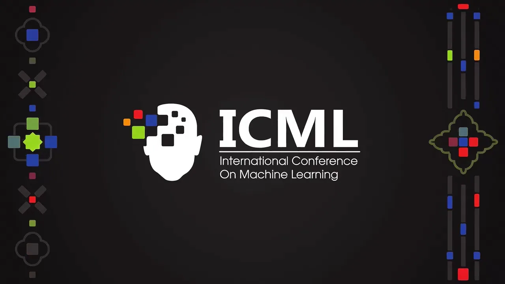
【0:00】ICML conference card
【0:00】ICML 会议主持页

【8:34】Scaling Deep Learning In Financial Markets — Iain Dunning, Head of AI, Hudson River Trading (title slide)
【8:34】Scaling Deep Learning In Financial Markets — Iain Dunning，Head of AI，Hudson River Trading（标题页）
开场 · Hudson River Trading 与 HAIL
- 演讲者 Iain Dunning（Hudson River Trading 人工智能负责人）开场，介绍 HRT：全球全天候自营 AI 交易公司，覆盖股票/期货/期权/加密等，约占全球交易量 10–20%、覆盖 200+ 市场。
- HRT AI Labs (HAIL)：由研究员与工程师组成，为市场构建 foundation models，是交易系统的核心；不为研究而研究，但坚持基础研究，十多年仍在推进前沿。
- 今日议程：把市场与市场数据作为一种「模态」引入；探讨构建 Large Market Models（类比 LLM）的可行性；并突出其中的独特挑战，邀请听众交流。
[08:36 – 08:45]
I think I'll get started. How's the volume? Up, up, talk a little closer like this. Yeah, okay, echoey? A little bit. Oh my goodness, that's some echo.
我想我会开始了。音量怎么样？起来，起来，这样说话再近一点。是啊，好吧，回声？一点点。哦天哪，这是一些回声。
[08:45 – 08:59]
Anyway, well if the volume level's okay, I'll get started. So welcome everyone to this cavernous hall here today. This talk is called Scaling Deep Learning and Financial Markets. My name is Ian Dunning. I'm the head of AI at a company
不管怎样，如果音量没问题的话，我就开始了。欢迎大家今天来到这个宽敞的大厅。这次演讲的主题是“扩展深度学习和金融市场”。我叫伊恩·邓宁。我是一家公司的人工智能负责人
[08:59 – 09:11]
called Hudson River Trading. And today I'm just gonna give you a little bit of a taste of our world, our problems. My main agenda here is that you'll come and ask me more questions,
称为哈德逊河贸易。今天我只是想让你们稍微了解一下我们的世界和我们的问题。我在这里的主要议程是你会来问我更多问题，
[09:11 – 09:28]
either after the talk or at our booth. But please keep those questions in mind for the end. So what is Hudson River Trading? Well, my answer to this question is varied over the years, but in the year of 2026, obviously the answer is a neo lab.
无论是在演讲之后还是在我们的展位上。但最后请记住这些问题。那么什么是哈德逊河交易？好吧，多年来我对这个问题的答案各不相同，但在 2026 年，答案显然是 Neo 实验室。
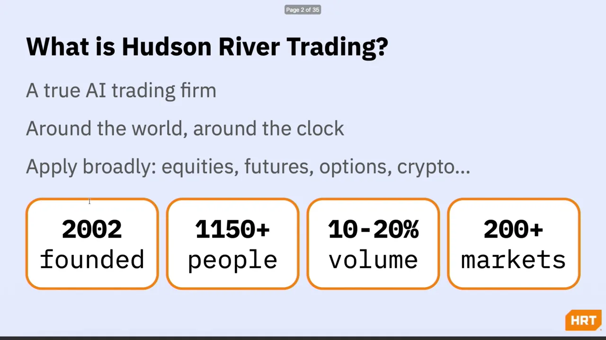
【9:16】What is Hudson River Trading? — A true AI trading firm; around the world, around the clock; broadly equities/futures/options/crypto... 2002 founded, 1150+ people, 10-20% of global volume, 200+ markets
【9:16】什么是 Hudson River Trading? 全球范围内全天候运营的真正 AI 交易公司；覆盖股票/期货/期权/加密等广泛产品；2002 年成立，1150+ 员工，占全球交易量 10-20%，覆盖 200+ 市场
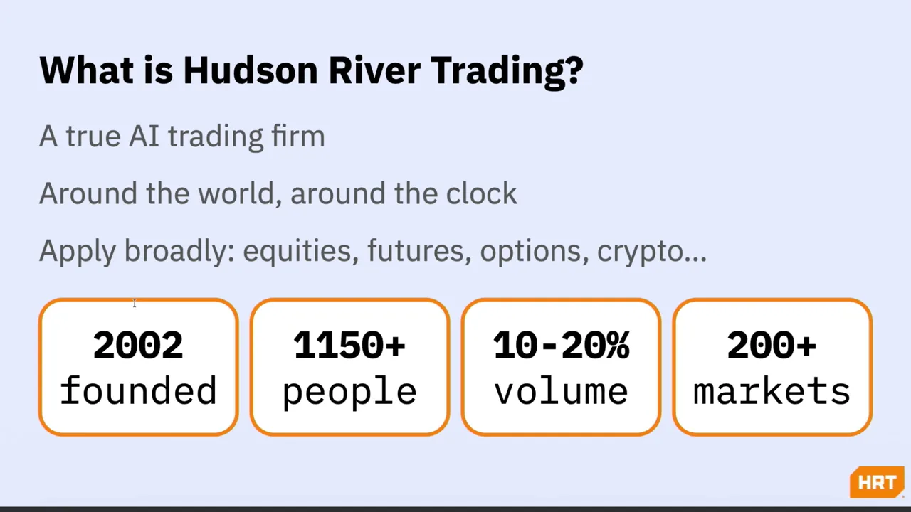
【9:18】What is Hudson River Trading? (same stats)
【9:18】什么是 Hudson River Trading（同样的关键数字）
[09:28 – 09:44]
A neo lab that's focused on first applying AI to markets and then of course apply AI to everything else. But seriously, we are an AI trading firm. And what I mean by that is we use sort of principles of artificial intelligence. AI can be much smarter than us in the domain of trading.
一个新实验室专注于首先将人工智能应用于市场，然后当然将人工智能应用于其他一切。但说实话，我们是一家人工智能贸易公司。我的意思是我们使用人工智能的某种原理。在交易领域，人工智能可以比我们聪明得多。
[09:44 – 09:56]
And we use this to kind of run trading operations around the world, around the clock and apply it to everything. I think this is very much in the spirit of an AI solution. Maybe we're running my little neo lab sort of lying there.
我们用它在世界各地全天候运行交易操作，并将其应用于一切。我认为这非常符合人工智能解决方案的精神。也许我们正在运行我的小型新实验室。
[09:56 – 10:14]
We've been around for quite a long time and have a reasonable number of people. But what I think is kind of interesting and maybe unexpected is that roughly 10 to 20% of all trades in the world are done by our AI systems. And I think, I talked to a lot of people about AI in trading,
我们已经存在了很长一段时间并且拥有相当数量的人员。但我认为有趣且可能出乎意料的是，世界上大约 10% 到 20% 的交易是由我们的人工智能系统完成的。我想，我和很多人谈论了交易中的人工智能，
[10:14 – 10:24]
especially people on the West Coast of America who are like, hmm, wouldn't it be interesting if someone applied AI to markets? And I say to them, wouldn't it be interesting indeed?
尤其是美国西海岸的人们，他们会想，嗯，如果有人将人工智能应用于市场，那不是很有趣吗？我对他们说，这难道不是很有趣吗？
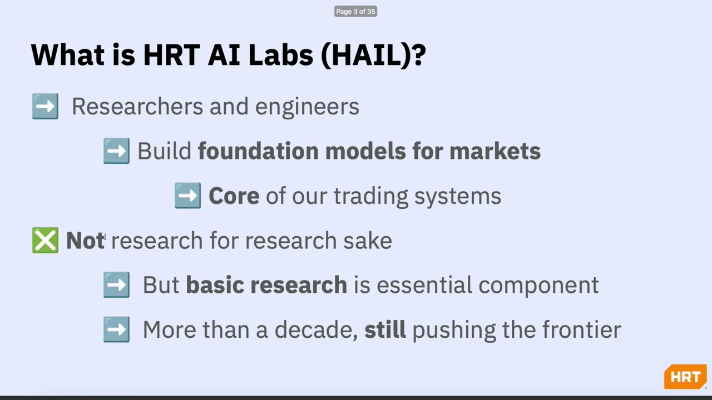
【10:24】What is HRT AI Labs (HAIL)? — Researchers and engineers; build foundation models for markets; core of our trading systems; not research-for-research-sake; basic research is essential; more than a decade, still pushing the frontier
【10:24】什么是 HRT AI Labs (HAIL)? 研究员和工程师；构建面向市场的 foundation models；是交易系统的核心；不为研究而研究；基础研究是关键；十多年仍在推动前沿
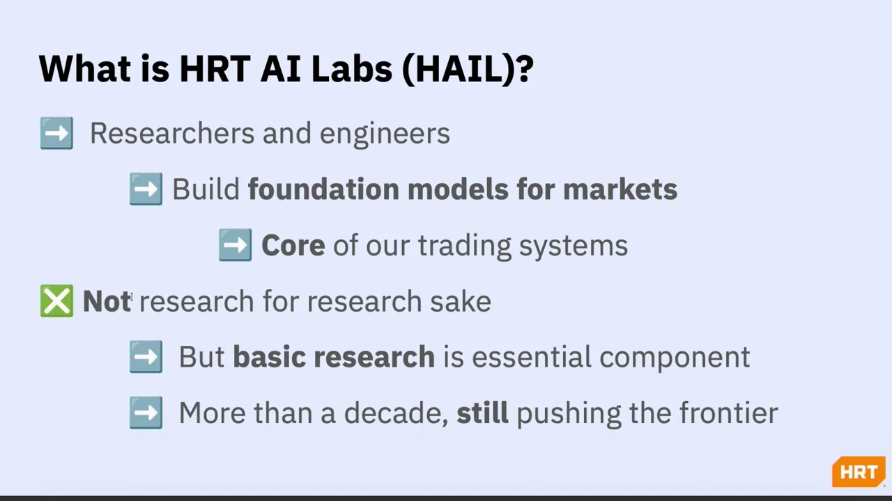
【10:25】Same HAIL overview
【10:25】HAIL 概览（同上）
[10:25 – 10:41]
So the team I run is called Hail HIT AI Labs. We're just a team of researchers and engineers and what I sort of describe ourselves as doing has also changed over the years, even if the work hasn't changed necessarily that much. And the way I like to frame it now
所以我管理的团队叫做Hail HIT AI Labs。我们只是一个由研究人员和工程师组成的团队，我所描述的自己所做的事情多年来也发生了变化，即使工作并没有必然改变那么多。我现在喜欢的构图方式
[10:41 – 10:53]
is we're building the foundation models for markets. Everyone wants to be building a foundation model for different modalities. Well, market data is just one modality. And if you succeed in sort of applying the ideas, the dreams of foundation models, big data,
我们正在为市场建立基础模型。每个人都希望为不同的模式建立一个基础模型。嗯，市场数据只是一种形式。如果你成功地应用了基础模型、大数据的想法、梦想，
[10:53 – 11:07]
big compute, bring them together, then it wouldn't be an amazing thing to have a foundation model for markets. This is not like an abstract sort of basic research project, it's something to be achieved at a future date. It's something that we have a version of now,
大计算，将它们结合在一起，那么拥有市场的基础模型就不会是一件了不起的事情。这不像一个抽象的基础研究项目，它是在未来实现的目标。我们现在有一个版本，
[11:07 – 11:23]
our efforts have focused on pushing that every day. We've been doing deep learning in production for 10 years. I would not go so far as to say that we were doing foundation models in 2014, but maybe we were, you know, who knows. But we're still pushing our frontiers every day
我们每天的努力都集中在推动这一目标上。我们在生产中进行深度学习已经有 10 年了。我不会说我们在 2014 年就在做基础模型，但也许我们是，你知道，谁知道呢。但我们仍然每天都在突破我们的界限
[11:23 – 11:39]
and I think that's a really exciting thing. And I wanna kind of give you an insight into what we're actually doing, but at a high level. I wanna kind of familiarize you guys with the idea of market data as a modality, just like other modalities, like languages, images,
我认为这是一件非常令人兴奋的事情。我想让你们深入了解我们实际上在做什么，但是是在高层次上。我想让你们熟悉市场数据作为一种模式的概念，就像其他模式一样，比如语言、图像、
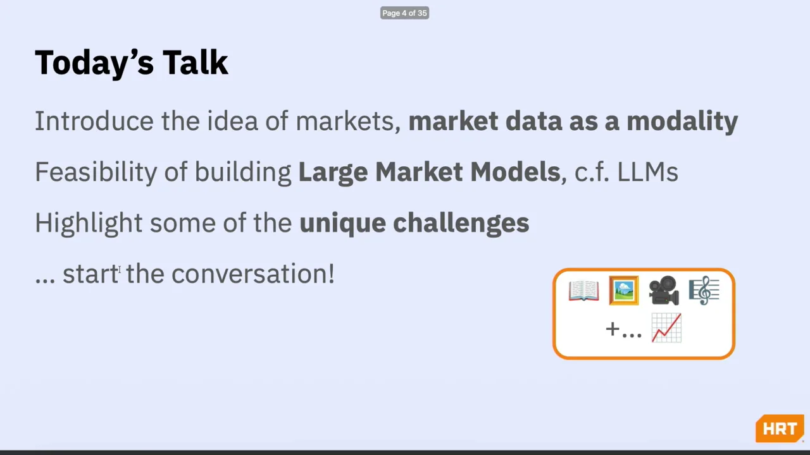
【11:28】Today's Talk — Introduce the idea of markets and market data as a modality; feasibility of building Large Market Models (c.f. LLMs); highlight some of the unique challenges; ...start the conversation!
【11:28】今天讲什么 将市场与市场数据作为模态引入；构建 Large Market Models 的可行性（参考 LLM）；强调其中的独特挑战；…开始这场对话
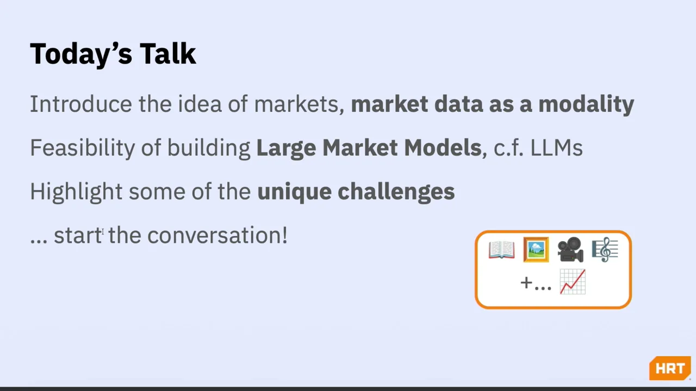
【11:29】Today's Talk (same outline)
【11:29】今天讲什么（同上提纲）
[11:39 – 11:55]
audio, video, I wanna kind of convince you that trading markets or an environment where sort of LLM-like ideas can be employed and highlight some of the unique challenges of doing so. And again, you know, just starting the conversation is so much I can say about this,
音频、视频，我想说服您，可以采用类似法学硕士的想法的交易市场或环境，并强调这样做的一些独特挑战。再说一遍，你知道，刚开始对话我就可以说这么多，
[11:55 – 12:17]
but I'm only gonna be talking for a mere 40 minutes or so. So, wow, my background image is gone. Markets and market data. So I sense a lot of misunderstanding sometimes when it comes to talking about what a market even is. There's a sort of notion that markets are zero sum,
但我只会讲 40 分钟左右。所以，哇，我的背景图片不见了。市场和市场数据。因此，当谈到市场是什么时，我有时会感到很多误解。有一种观念认为市场是零和的
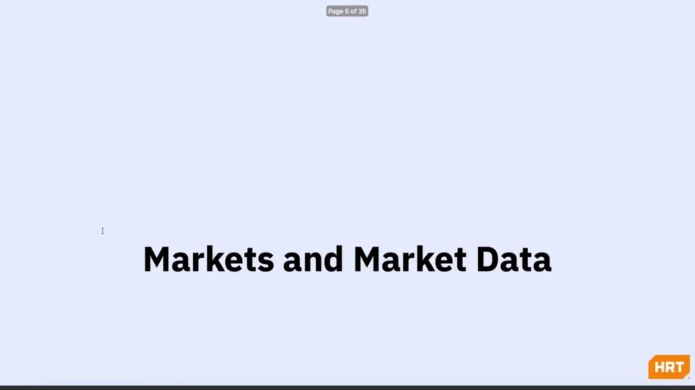
【11:58】Markets and Market Data (section opener)
【11:58】Markets and Market Data（章节扉页）
【11:59】Markets and Market Data (title only)
【11:59】Markets and Market Data（标题留白）
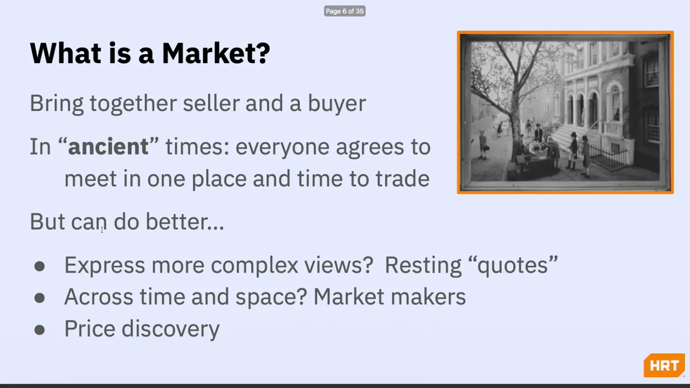
【12:02】What is a Market? — Bring together seller and buyer. In 'ancient' times: everyone agrees to meet at one place and time to trade. But can do better… Express more complex views? Resting 'quotes'. Across time and space? Market makers. Price discovery.
【12:02】什么是市场 把买卖双方撮合在一起。古代人们约定在同一时间地点交易。但可以做得更好… 表达更复杂观点？挂单（resting quotes）。跨时空？做市商。价格发现。
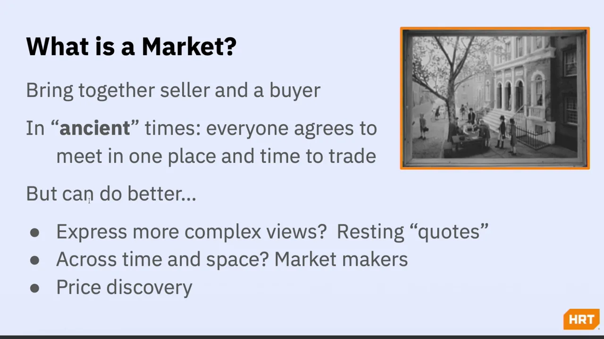
【12:04】What is a Market? (same, with image of trading floor)
【12:04】什么是市场（同上，配交易大厅图）
Markets and Market Data
- 什么是市场：撮合买卖双方、resting quotes、做市商、价格发现。
- 限价订单簿（LOB）：买卖多档报价，你加入的队列位置决定能否成交。
- 真实数据 = 事件流：ADD / DELETE / CHANGE / TRADE，外加集合竞价、资金费率、LULD 等；每条事件约 10 字节信息，book:trade ≈ 7:1，且高度突发。
- 事件作为一种「类语言模态」：每个事件是带多个属性的「动词」（如 Add Order: Buy, $100.02, 50 shares, GTC），信息含量可能远小于也可能大于一个 token。
- 具体化：KRX 市场日均约 3 亿事件、单 60 秒窗口可突发 4 万+；与 LLM 数据集对比，市场历史足以支撑 100B–1T 参数的预训练语料。
- 交易策略分类：Taking（流动性回收 / 价格发现）vs Market Making（流动性提供）；老派 scaling 律：参数数量 ∝ horizon 数量，引出建模与扩展。
[12:17 – 12:28]
some sort of hostile game where everyone's trying to outsmart ourselves. And when I look around the room and see the jump trading T-shirts, I kind of feel that a little bit. But in reality, I think markets are pretty cool.
某种敌对的游戏，每个人都试图智胜自己。当我环顾房间并看到跳跃交易 T 恤时，我有一点这样的感觉。但实际上，我认为市场非常酷。
[12:28 – 12:43]
They're just a sort of a place to bring buyers and sellers together. In ancient times, a few hundred years ago in New York City, that was under the buttonwood tree. And that's how the New York Stock Exchange got started. If you don't have instantaneous communication
它们只是将买家和卖家聚集在一起的地方。在古代，几百年前的纽约市，那是在梧桐树下。这就是纽约证券交易所的起源。如果您没有即时通讯
[12:43 – 12:53]
on your phone with everyone and you wanna buy and sell some stocks, you kind of have to say like, all right guys, let's agree to meet up at 10 a.m. On weekdays, we'll all meet up. Anyone who wants to buy or sell
如果你想买卖一些股票，你可以通过电话跟大家说，好吧，伙计们，我们同意上午 10 点见面吧。在工作日，我们都会见面。任何想要购买或出售的人
[12:53 – 13:11]
can try and find a counterparty and we'll do betrayed. Obviously in the modern electronic era, we can do better, but the details are kind of important. I think an important thing to emphasize again is that people come to markets because they have something they want to do, achieve.
可以尝试找到一个交易对手，我们就会被背叛。显然在现代电子时代，我们可以做得更好，但细节很重要。我认为需要再次强调的重要一点是，人们来到市场是因为他们有想要做的事情、想要实现的目标。
[13:11 – 13:21]
People are not just sort of generally engaging and kind of sniping behavior. We're like, I'm trying to outsmart you. I'm trying to outsmart the other person. They have some economic purpose they wanna achieve when they come to the market.
人们不仅仅是一种普遍的参与和狙击行为。我们就像，我想智胜你。我正试图比别人更聪明。当他们进入市场时，他们有一些想要实现的经济目标。
[13:21 – 13:33]
For example, for me, I buy and sell. Well, actually I never sell. I just buy ETFs because I'm really boring. I don't actually like trading in my personal account very much. So I just wanna get some good old broad market ETFs.
例如，对我来说，我买和卖。嗯，实际上我从来不卖。我只是买ETF，因为我真的很无聊。我实际上不太喜欢在我的个人账户中进行交易。所以我只想购买一些好的旧大市场 ETF。
[13:33 – 13:44]
We are in Korea, so I feel like I'm kind of going counter narrative on that, but not going triple long SK-Hynix, but I'm a boring guy. So markets have all sorts of purposes. Maybe you wanna go triple long SK-Hynix,
我们在韩国，所以我觉得我有点反驳这一点，但不会去三倍长的SK-Hynix，但我是一个无聊的人。所以市场有各种各样的目的。也许你想要三倍长的SK-Hynix，
[13:44 – 13:58]
maybe you wanna buy the S&P 500. All those things, to me, I'm not necessarily looking to be smarter than someone on price. I just wanna take my currency and exchange it for equities at a reasonable price with minimal slippage and spread.
也许你想购买标准普尔 500 指数。对于我来说，所有这些事情，我不一定希望在价格方面比某人更聪明。我只想以合理的价格将我的货币兑换成股票，并且滑点和点差最小。
[13:59 – 14:14]
So anyway, going back to the buttonwood tree, it's kind of limiting to meet every day at 10 a.m. What else can I do? Well, perhaps I could enrich it by saying like, hey, I'm not just willing to buy so many shares at one price. Maybe I'm willing to buy this many shares at this price,
所以无论如何，回到梧桐树，每天上午 10 点见面有点限制。我还能做什么？好吧，也许我可以通过说这样的话来丰富它：嘿，我不仅仅愿意以一个价格购买这么多股票。也许我愿意以这个价格购买这么多股票，
[14:14 – 14:27]
this many shares at another price, and so on. Maybe I'm even willing to buy or sell some shares at the right price. That unlocks an interesting feature. For example, if I show up at 10 a.m. and you show up at 3 p.m.,
以另一个价格购买这么多股票，依此类推。也许我什至愿意以合适的价格购买或出售一些股票。这解锁了一个有趣的功能。例如，如果我上午 10 点出现，而你下午 3 点出现，
[14:27 – 14:38]
I wanted to buy, you wanted to sell, we're missing each other by hours. But perhaps a market maker could take either side of both trades and sort of intermediate across time, perhaps at some fraction of a penny
我想买，你想卖，我们几个小时都在想念彼此。但也许做市商可以在时间上采取两种交易的任何一方和某种中间形式，也许只花费一美分的一小部分
[14:38 – 14:52]
to mitigate the risk of that position. And finally, the price discovery, what is something worth? Well, for example, if I wanna go triple long SK-Hynix, I need some reference price for SK-Hynix I can trust. Markets are an important role of markets
以减轻该职位的风险。最后，价格发现，什么东西值得？好吧，例如，如果我想要三倍长的 SK-Hynix，我需要一些我可以信任的 SK-Hynix 的参考价格。市场发挥着重要作用
[14:52 – 15:06]
to facilitate price discovery. In the course of acting in markets, we kind of discover the fair price for things. You can use that to do various economically useful things like hedging and various, well, degenerate things as well.
以促进价格发现。在市场运作的过程中，我们会发现事物的公平价格。你可以用它来做各种经济上有用的事情，比如对冲和各种退化的事情。
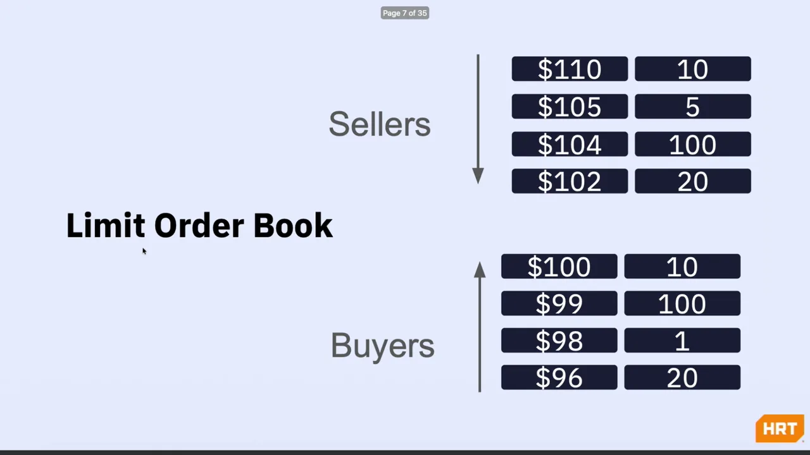
【15:06】Limit Order Book — Sellers: $110(10)/$105(5)/$104(100)/$102(20). Buyers: $100(10)/$99(100)/$98(1)/$96(20). Price = midpoint; the queue you join matters.
【15:06】限价订单簿 卖方：$110(10)/$105(5)/$104(100)/$102(20)；买方：$100(10)/$99(100)/$98(1)/$96(20)。价格≈中点；你加入的队列很关键。
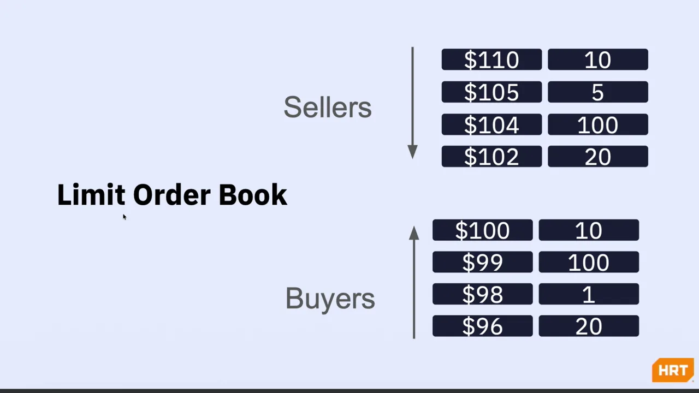
【15:06】Limit Order Book (similar order book illustration)
【15:06】限价订单簿（类似的订单簿示意图）
[15:06 – 15:21]
So, all this market talk, what does it actually look like at a lower level? This is something that you normally see described, especially in sort of academic finance literatures, the limit order book. It's a very simple concept.
那么，所有这些市场讨论，在较低水平上实际上是什么样子呢？这是您通常会看到的描述，特别是在学术金融文献中，即限价订单书。这是一个非常简单的概念。
[15:21 – 15:34]
At any given point in time, we can look at the outstanding list of all orders to buy or sell an asset up to that point in the day. Here, I've got a little simple example. I've got four sell orders displayed and four buy orders displayed.
在任何给定时间点，我们都可以查看当天截至该时间点的所有买入或卖出资产订单的未完成列表。在这里，我有一个简单的例子。我显示了四个卖单和四个买单。
[15:36 – 15:50]
Each order has a price and a quantity. Notably, the best selling price of $102 is above the best buying price of $100, because of course, if I overlapped, those people would just trade. And that's pretty much it.
每个订单都有价格和数量。值得注意的是，102 美元的最佳卖出价高于 100 美元的最佳买入价，因为当然，如果我重叠，那些人就会进行交易。差不多就是这样了。
[15:51 – 16:11]
One thing to kind of note is that at the top level there at the $100 to buy 10 shares at $100, and at the top level of the sell side, $102 at 20 shares, well, 10 and 20 are different numbers. And so, if you were to kind of go back into quant finance land a decade ago,
需要注意的一件事是，在最高水平，100 美元可以以 100 美元购买 10 股，而在卖方最高水平，102 美元可以购买 20 股，嗯，10 和 20 是不同的数字。因此，如果你要回到十年前的量化金融领域，
[16:11 – 16:23]
which is how a lot of people's perceptions are still stuck, what you would do is say like, hey, I can look at this order book and think really deeply about it and construct some features manually. And so, one feature I might construct is,
这就是很多人的看法仍然被困住的原因，你会做的就是说，嘿，我可以看看这个订单簿并深入思考它并手动构建一些功能。因此，我可能构建的一项功能是，
[16:24 – 16:36]
well, it looks like there are more people willing to sell at that top level than buy. So maybe the price should be closer to $102 than $100, or maybe it should be forever away. You can think about that. You can think about how to use the information
好吧，看起来愿意在最高水平出售的人比购买的人更多。因此，也许价格应该更接近 102 美元，而不是 100 美元，或者也许应该永远消失。你可以考虑一下。您可以考虑如何使用这些信息
[16:36 – 16:51]
at the other levels and construct some sort of feature. But that's not very deep learning. We're at ICML, and deep learning as a philosophy means many things to me. But one thing that's really stuck with me is what happened to computer vision many, many years ago,
在其他级别并构建某种功能。但这并不是很深入的学习。我们在 ICML，深度学习作为一种哲学对我来说意义重大。但真正困扰我的一件事是很多很多年前计算机视觉发生的事情，
[16:51 – 17:04]
where the bit of lesson there was screw your little features, I'm just gonna plug a whole bunch of data into a convolutional network, and it's gonna learn all your features and much, much more. And so, if you think about markets then, why wouldn't we do the same thing?
课程中的一些内容是搞砸你的小特征，我只是将一大堆数据插入到卷积网络中，它会学习你的所有特征以及更多很多。那么，如果你考虑一下市场，我们为什么不做同样的事情呢？
[17:04 – 17:18]
And why would you use handcrafted features when you could just use the real data? And so, I like to think of the real data, and I like to think of it at this level especially because it works with my little LLM analogy I'm trying to force on you,
当您可以使用真实数据时，为什么还要使用手工制作的功能呢？所以，我喜欢思考真实的数据，我喜欢在这个层面上思考它，特别是因为它与我试图强加给你的法学硕士的小类比相符，
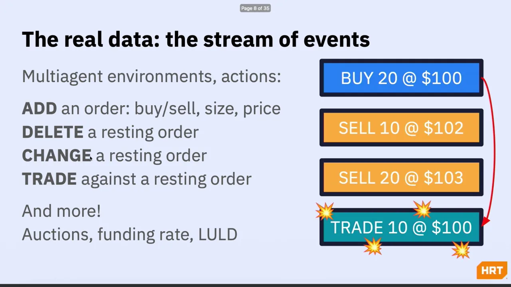
【17:06】The real data: the stream of events — Multiagent environments, actions: BUY 20@$100, SELL 10@$102, SELL 20@$103; ADD = add an order (buy/sell, size, price); DELETE = resting order; CHANGE = resting order; TRADE against a resting order. Also auctions, funding rate, LULD.
【17:06】真实数据：事件流 多智能体环境的动作：BUY 20@$100、SELL 10@$102、SELL 20@$103；ADD（挂单）、DELETE（撤单）、CHANGE（改单）、TRADE（成交）。还有集合竞价、资金费率、LULD 等。
[17:18 – 17:31]
is to think about the stream of events. So, as I discussed earlier, markets are multi-Asian environments where everything on the feed of events is the action of an agent. We don't know much about these agents.
就是思考事件的发展过程。因此，正如我之前讨论的，市场是多亚洲环境，其中事件的所有内容都是代理人的行动。我们对这些代理了解不多。
[17:31 – 17:44]
We don't know how many agents there are. One of them is Jump, one of them is HRT, one of them is Citadel, and a whole bunch of them are just normal people. They're retail. They're the California Teachers Pension Fund.
我们不知道有多少代理人。其中一个是Jump，一个是HRT，一个是Citadel，还有一大堆都是普通人。他们是零售的。他们是加州教师养老基金。
[17:44 – 18:01]
They're me buying my broad market ETFs. We're all agents in this game, and we can all express our views by doing a relatively limited set of actions in the market. And so, on the right-hand side of a slide here, I have some very loose actions.
他们是我购买大市场 ETF。我们都是这个游戏中的代理人，我们都可以通过在市场上做一组相对有限的行动来表达我们的观点。因此，在幻灯片的右侧，我有一些非常松散的操作。
[18:01 – 18:16]
So, the flow of time going from top to bottom, someone says, I'm willing to buy 20 shares at $100. Someone else says, I'm willing to sell 10 shares at $102. Someone else says, I'm willing to sell 20 shares at $103. And then someone comes along and says,
因此，时间从上到下流动，有人说，我愿意以 100 美元购买 20 股。还有人说，我愿意以 102 美元的价格出售 10 股。还有人说，我愿意以 103 美元的价格出售 20 股。然后有人走过来说，
[18:16 – 18:31]
you know what, that first guy, I'll take you up on that. I'll buy 10, sorry, I'll sell 10 shares to you of the 20 you were willing to buy. And we meet together at $100, and we do a trade. And so, that's kind of the action space. I can add orders to the book.
你知道吗，第一个人，我会带你去的。我会买 10 股，抱歉，我会在您愿意购买的 20 股中向您出售 10 股。我们以 100 美元的价格见面，然后进行交易。这就是行动空间。我可以向这本书添加订单。
[18:31 – 18:44]
I can delete orders from the book. I can maybe change an order on the book, and I can trade against a resting order. In reality, it's kind of a lot more complex. There's lots of interesting things that happen. Different markets, markets are very diverse.
我可以从书中删除订单。我也许可以更改账本上的订单，并且我可以根据静态订单进行交易。事实上，情况要复杂得多。有很多有趣的事情发生。不同的市场，市场是非常多样化的。
[18:44 – 19:00]
Some of the ones that I really like are auctions. Many markets have an auction to start the day. Many markets have an auction at the end of the day. Some markets have auctions in the middle of a day. Some markets have funding rates. If you're a crypto person, you know what a funding rate is.
我真正喜欢的一些是拍卖。许多市场都会以拍卖开始这一天。许多市场在一天结束时都会举行拍卖。有些市场在中午举行拍卖。一些市场有融资利率。如果您是加密货币人士，您就会知道资金费率是多少。
[19:00 – 19:14]
The feed broadcasts updates on something about the net position of the market and the difference from the underlier and so on and how much you have to pay for your margin. Some markets have limit up, limit down, which is basically saying that the market
该提要广播有关市场净头寸、与底层市场的差异等以及您必须支付多少保证金的更新信息。有的市场涨停、跌停，基本上就是说市场
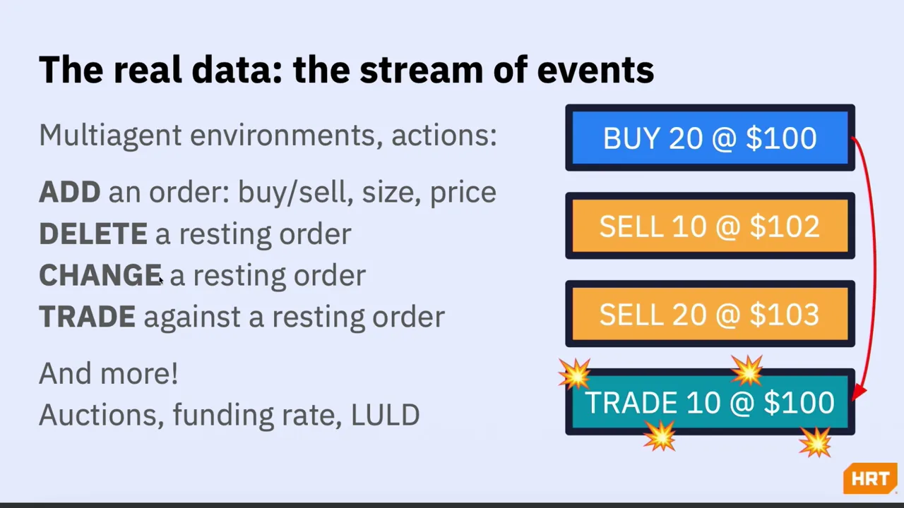
【19:07】Same 'stream of events' overview
【19:07】事件流概览（同上）
[19:14 – 19:27]
doesn't let the price change too much within some time period. There's all sorts of rules about that, and the market will tell you about those price bands. All this rich information, and this is kind of the substance
不让价格在一段时间内变化太大。这有各种各样的规则，市场会告诉你这些价格范围。所有这些丰富的信息，这就是实质内容
[19:27 – 19:46]
for which we have to build our large market models. So I'm gonna keep torturing this analogy forever. So events as a language like modality. One thing that's interesting to think about is are market events more or less rich than words or tokens?
为此我们必须建立我们的大市场模型。所以我会永远折磨这个类比。因此事件作为一种语言就像情态一样。值得思考的一件有趣的事情是，市场事件比文字或代币更丰富还是更不丰富？
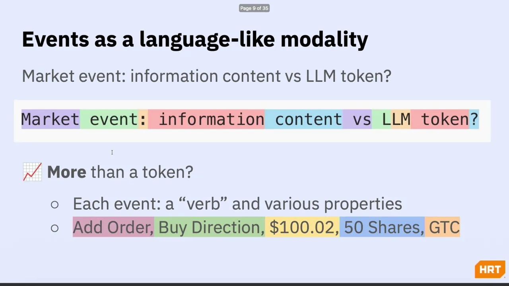
【19:29】Events as a language-like modality — Market event: information content vs LLM token? More than a token? Each event is a 'verb' with various properties; e.g. Add Order: Buy Direction, $100.02, 50 Shares, GTC.
【19:29】把事件当作类语言模态 市场事件：信息含量 vs LLM token？ 远远不止一个 token？ 每个事件是一个「verb + 多个属性」，如 Add Order: Buy Direction, $100.02, 50 Shares, GTC。
【19:30】Same 'language-like modality' diagram
【19:30】类语言模态图（同上）
[19:46 – 20:02]
I'm just gonna use word and token kind of interchangeably. So a few, don't know what I'm talking about, but I'm sure you do. Here's the tokenization of this sentence. Market event information content versus LLM token. And generally each word and the punctuation here
我只是交替使用单词和标记。有一些人不知道我在说什么，但我相信你们知道。这是这句话的标记化。市场事件信息内容与 LLM 代币的比较。一般来说，这里的每个单词和标点符号
[20:02 – 20:19]
got one token. LLM got split into more than one token, which I think is kind of cute. But yes, this is like the GPT-5 tokenizer, I believe. So what I'd like you to consider is, is a market event more or less rich than a token?
得到了一个令牌。 LLM 被分成了多个代币，我认为这很可爱。但是，是的，我相信这就像 GPT-5 分词器。所以我想让大家考虑的是，市场事件是比代币更丰富还是更不丰富？
[20:19 – 20:33]
How many tokens, if you think of a token as being a word, would you need to encode a market event? I'm gonna argue both sides, and so you can decide for yourself. But first I'll argue that a market event is much richer than any given token in an LLM,
如果您将代币视为一个单词，那么您需要多少代币来对市场事件进行编码？我会争论双方，所以你可以自己决定。但首先我要说的是，市场事件比法学硕士中的任何给定代币都要丰富得多，
[20:33 – 20:35]
and so should count for more.
因此应该更重要。
[20:36 – 20:51]
The argument here is that a simple thing, like an ad order, is actually more like a verb with many properties, many sort of nouns and adjectives that follows it, so I take an ad order, it's an ad. Okay, that's my first token. What direction is it?
这里的论点是，一个简单的东西，比如广告订单，实际上更像是一个具有许多属性的动词，后面有许多种类的名词和形容词，所以我采取了一个广告订单，它是一个广告。好吧，这是我的第一个令牌。是什么方向？
[20:51 – 21:12]
It's a buy, it's a price, $100 and two cents. I could maybe use many tokens to represent $100 and two cents if LLM got two tokens, how many shares it is, how long the order should stay on the book, and so on. So one market event here is worth five tokens by this map. So if I had a one trillion market event data set,
这是购买，价格是 100 美元两美分。 I could maybe use many tokens to represent $100 and two cents if LLM got two tokens, how many shares it is, how long the order should stay on the book, and so on.因此，根据这张地图，这里的一个市场事件价值 5 个代币。所以如果我有一个一万亿的市场事件数据集，
[21:12 – 21:31]
I actually have five trillion tokens, and so I can train a Chinchilla optimal model of so on, so on, so on. On the other hand, I think my argument might suck, and this is why, and this is because many market events basically don't have much information content.
我实际上有五万亿代币，所以我可以训练一个 Chinchilla 最优模型等等。另一方面，我认为我的论点可能很糟糕，这就是原因，这是因为很多市场事件基本上没有太多信息内容。
【21:19】Less than a token? — Many events have ~zero information content (uniformed traders, no-signal two-sided quotes). Something to consider: time (non-poisson, position embeddings?)
【21:19】还不及一个 token？ 许多事件信息含量为零（无信息优势的 traders、两边挂单）。要考虑的维度：时间（非泊松、position embeddings？）
【21:20】Less than a token? (same)
【21:20】还不及一个 token？（同上）
[21:31 – 21:42]
They have bytes of information, they express many different things, but do they have any kind of juice to them? In my previous example, every sort of word in that sentence had quite a lot of semantic meaning, apart from maybe the colon.
它们有字节的信息，它们表达许多不同的东西，但它们有什么果汁吗？在我之前的例子中，除了冒号之外，该句子中的每种单词都具有相当多的语义含义。
[21:43 – 21:56]
But in markets, there's a lot of just noise. Everyone knows this, right? Markets that are low signal to noise. There's a lot of just churn. And I think it's probably incorrect to say that there are many market events
但在市场上，存在很多噪音。每个人都知道这一点，对吧？低信噪比的市场。有很多只是流失。我认为说有很多市场事件可能是不正确的
[21:56 – 22:09]
that have no information content, but there are certainly market events that have relatively low information content. So a characterized view of retail traders is that they're essentially random walkers. You're seeing as many buys as sells
没有信息含量，但肯定有一些市场事件的信息含量相对较低。因此，散户交易者的一个典型观点是，他们本质上是随机游走者。您看到的买入数量与卖出数量一样多
[22:09 – 22:19]
for any given stock on any given day. And so a retail trade might tell you basically nothing about the future of that instrument, and so is it fair to say that a retail trade has much information content?
对于任何给定日期的任何给定股票。因此，零售贸易可能基本上不会告诉您有关该工具的未来的任何信息，因此可以公平地说零售贸易拥有大量信息内容吗？
[22:22 – 22:35]
A simple market-making type thing that just wants to kind of do an even two-sided quote arguably has no sort of signal leakage to the market. It doesn't say much. It's just saying, like, I'm willing to buy or sell around the current price.
一个简单的做市类型的事情，只是想做一个均匀的双向报价，可以说不会向市场泄漏任何信号。没什么可说的。它只是说，我愿意以当前价格购买或出售。
[22:35 – 22:47]
It doesn't really tell you anything. It's redundant with the information you already have. I think I'm biased, though. I think a market event is much richer than a token, and I'm biased because I think this modality is very interesting.
它并没有真正告诉你任何事情。它与您已有的信息相比是多余的。但我认为我有偏见。我认为市场事件比代币丰富得多，而且我有偏见，因为我认为这种模式非常有趣。
[22:47 – 23:01]
But something else I want to throw in there into your thought experiments about this topic is the role that time plays. So in this example, there's no explicit position embedding because that's not how we think about LLMs, right?
但我想在你关于这个主题的思想实验中加入一些东西，那就是时间所扮演的角色。所以在这个例子中，没有明确的职位嵌入，因为这不是我们对法学硕士的看法，对吗？
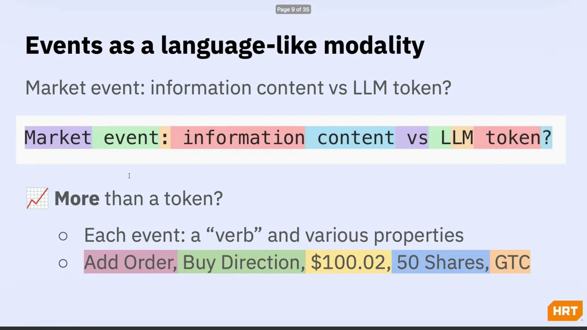
【22:55】Same 'language-like modality' recap
【22:55】类语言模态回顾（同上）
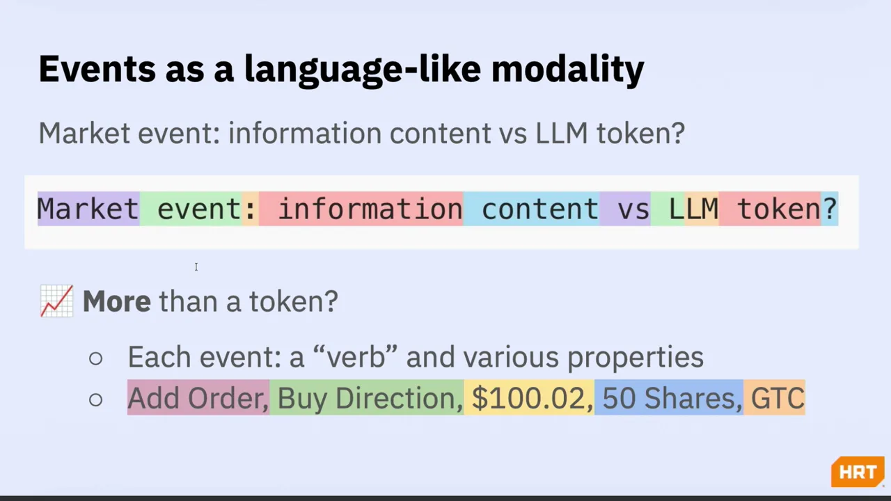
【22:56】More than a token? — Each event: a 'verb' + various properties; Add Order: Buy Direction, $100.02, 50 Shares, GTC
【22:56】超过一个 token？ 每个事件：一个「verb」+ 多个属性；举例 Add Order: Buy Direction, $100.02, 50 Shares, GTC
[23:01 – 23:16]
We take the positional embedding as something that's sort of at this orthogonal access to the token embedding. You use ROPE or whatever, or NOPE, which I can't believe is a thing. So you do a positional embedding on the tokens.
我们将位置嵌入视为对令牌嵌入的正交访问。你可以使用绳子或其他任何东西，或者不使用，我不敢相信这是一件事。因此，您对标记进行位置嵌入。
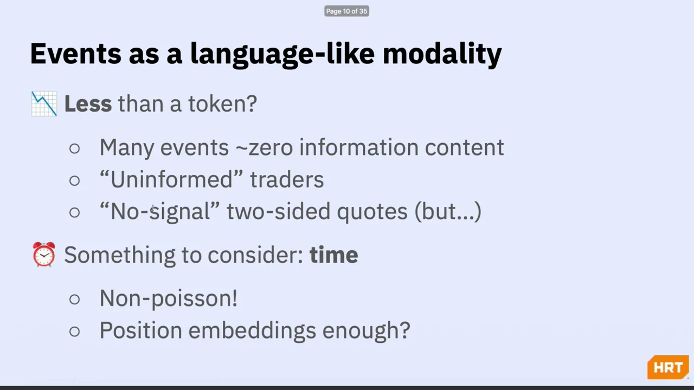
【23:13】Less than a token / Consider time / Non-poisson / Position embeddings?
【23:13】不及一个 token / 考虑时间 / 非泊松 / 位置 embedding？
【23:14】Same slide
【23:14】同一页
[23:17 – 23:32]
It works, I think, because there's no sort of sense of a cadence, it's just a incrementing index, position in document, and it's fine. You can do a lot of things with that. But in markets, there's this interesting element of time and timeliness.
我认为它是有效的，因为没有任何节奏感，它只是一个递增的索引，文档中的位置，这很好。你可以用它做很多事情。但在市场中，存在着时间和及时性这一有趣的因素。
[23:32 – 23:45]
And time in markets is kind of annoying. It's very fine precision, very non-poisson. A lot of things happen all at once and in as big voids. If you kind of don't think about that in terms of your representation and kind of handle it later,
市场上的时间有点烦人。它的精度非常高，非常非泊松。很多事情同时发生，并且发生在巨大的空白中。如果你不考虑你的代表权并稍后再处理它，
[23:45 – 23:58]
like a positional embedding might, you might be missing something in how you represent the market data. And so if you think of time as actually being part of the event itself, it makes each individual event a far more rich concept.
就像位置嵌入一样，您可能会在表示市场数据的方式中遗漏一些东西。因此，如果您认为时间实际上是事件本身的一部分，那么它会使每个单独的事件成为一个更加丰富的概念。
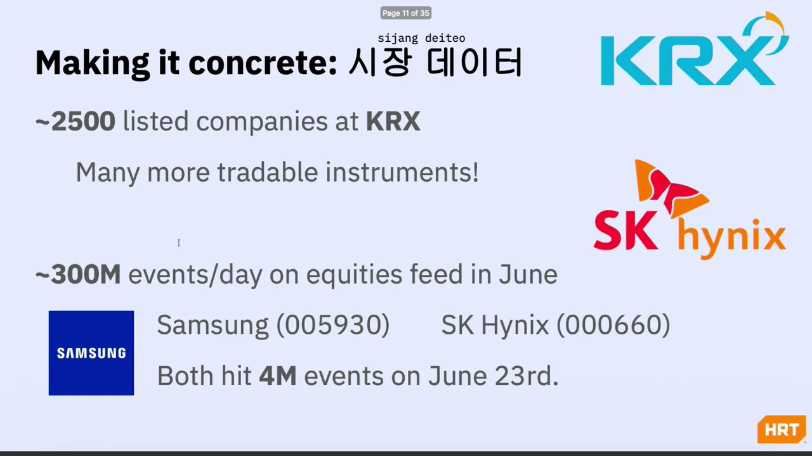
【23:56】Making it concrete: 시장 데이터 — ~2500 listed companies at KRX; many more tradable instruments. ~300M events/day on equities feed in June (Samsung 005930, SK Hynix 000660 — both hit 4M events on June 23rd)
【23:56】具体化：市场数据 KRX 约 2500 家上市公司；可交易品种远多于此。6 月份股票 feed 日均约 3 亿事件（Samsung 005930、SK Hynix 000660 — 6 月 23 日当天各 400 万事件）
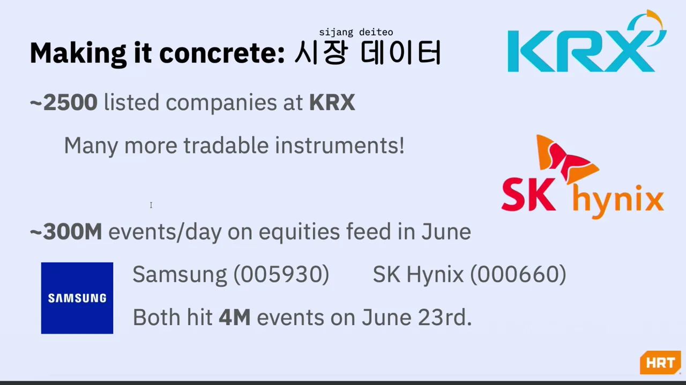
【23:57】Same Korean market example
【23:57】同一韩国市场例子
[23:58 – 24:11]
But anyway, we are in Korea, and so I thought I'd give some worked examples about Korean markets to kind of show you what I mean. So I learned that a lot of Korean words are romanized or inverse, what's inverse of romanization?
但无论如何，我们在韩国，所以我想我应该举一些有关韩国市场的有效例子来向您展示我的意思。所以我了解到很多韩语单词都是罗马化或反转的，什么是罗马化的反转？
[24:11 – 24:15]
So I think this says Shijang Data, which means market data.
所以我觉得这里说的是Shijang Data，就是市场数据的意思。
[24:17 – 24:30]
So anyway, in Korea, KRX, there are 2,500 or so listed companies. There's about 7,000 something instruments, at least according to Claude, when it looked at our code base. And that means there is a lot of stuff going on,
所以无论如何，在韩国KRX，有2500家左右的上市公司。至少根据 Claude 的说法，当它查看我们的代码库时，大约有 7,000 种工具。这意味着有很多事情正在发生
[24:30 – 24:39]
especially lately in Korea. And looking at just the number of feed events per day, there's something like 300 million events per day in Korean markets in recent months.
尤其是最近在韩国。仅从每天的 Feed 事件数量来看，近几个月韩国市场每天的事件数量约为 3 亿个。
[24:41 – 24:55]
To give a sort of specific example, both Korea, sorry, Korea, both Samsung, which is synonymous with Korea, Samsung and SK Hynix both had about 4 million events on June 23rd, just to know stocks in about something like
举一个具体的例子，韩国，对不起，韩国，三星，韩国的代名词，三星和SK海力士在6月23日都发生了大约400万个事件，只是为了了解类似的股票
[24:55 – 25:06]
six hours of continuous trading. You can kind of work back to figure out how intense it is at the peak. That's quite a lot of data. If we're thinking about an LLM terms, that would be a very long document
连续交易六个小时。你可以回过头来看看峰值时的强度有多大。这是相当多的数据。如果我们正在考虑法学硕士条款，那将是一个非常长的文件
[25:06 – 25:17]
by the standards of most LLM pre-training corpuses, for example. If you look at an LLM pre-training dataset, there are very few documents that would reach that sort of length. So it's already kind of noteworthy,
例如，按照大多数法学硕士预训练语料库的标准。如果您查看 LLM 预训练数据集，就会发现很少有文档能够达到这种长度。所以这已经是值得注意的了
[25:17 – 25:30]
even if you don't buy my math about events to tokens. You've already got something very rich just there. If you're gonna have to design a system that can handle 4 million events in a day. So what are these events? Well, in the Korean feed,
即使你不相信我关于事件到代币的数学。你已经拥有了非常丰富的东西。如果您需要设计一个可以在一天内处理 400 万个事件的系统。那么这些事件是什么？嗯，在韩国的饲料中，
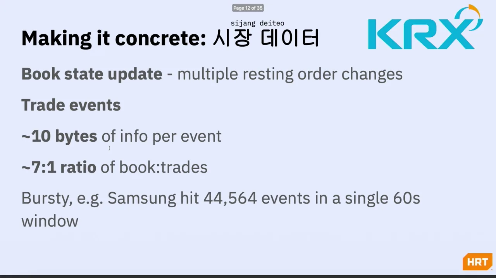
【25:25】Book state update (multiple resting order changes); Trade events. ~10 bytes of info per event; ~7:1 ratio of book:trades. Bursty, e.g. Samsung hit 44,564 events in a single 60s window
【25:25】Book state update（多次 resting order 变化）+ 成交事件。每条事件约 10 字节信息；book:trade ≈ 7:1。突发性极强：例如 Samsung 单个 60 秒窗口内可出现 44,564 次事件
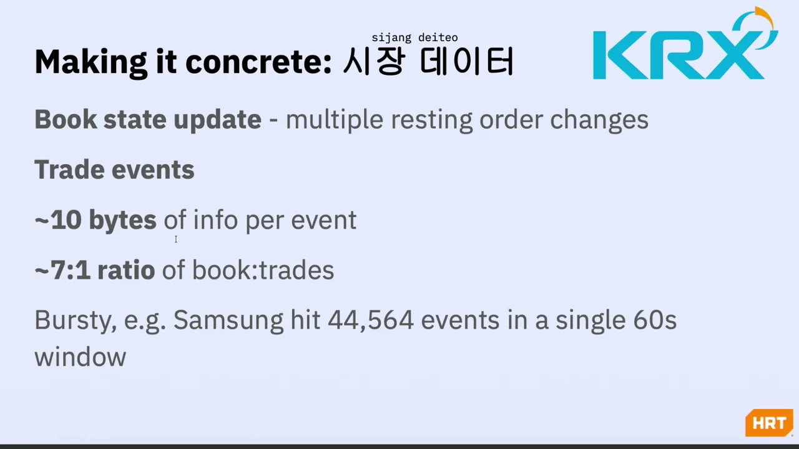
【25:26】Same book:trade ratio + burstiness
【25:26】同一 book:trade 比 + 突发性
[25:30 – 25:43]
there's two main event types. There's a book state update, which is basically saying these autos in the book changed and that can be just like one book, one order change. It could be many in one update. You could just disaggregate it into the individual updates.
有两种主要事件类型。有一个书籍状态更新，基本上是说书中的这些汽车发生了变化，这就像一本书，一个订单的变化一样。它可能是多合一更新。您可以将其分解为单独的更新。
[25:43 – 25:57]
And there are trade events. And there's something roughly like 10 bytes of information per event on average. And most of the events are not trades. They're actually just people changing their quotes, changing their resting autos to buy or sell.
还有贸易活动。每个事件平均大约有 10 个字节的信息。而且大多数事件都不是交易。他们实际上只是改变报价、改变闲置汽车来购买或出售的人。
[25:57 – 26:06]
This is not unique to Korea, but I find often is not what people think of. When a sort of non-trading person thinks about markets, they think about the trades. That's what they do. When they interact with markets,
这并不是韩国独有的，但我发现很多时候并不是人们所想的那样。当非交易人士思考市场时，他们会思考交易。这就是他们所做的。当他们与市场互动时，
[26:06 – 26:19]
they're not putting limit autos in their books so often. They're trading. But in reality, markets are just like this very sort of dance of people shifting back and forth, expressing their views about the price of the instrument by updating autos on the book.
他们不会经常把极限汽车列入他们的书里。他们在交易。但实际上，市场就像人们来回移动的这种舞蹈，通过更新书中的汽车来表达他们对工具价格的看法。
[26:19 – 26:34]
And this actually dominates the feed, which I think is pretty interesting. And going back to my non-person example, Bursti. So one of these Samsung days hit about 44,000 events in roughly the first 60 seconds of a day. So when you're thinking about a model design,
这实际上主导了提要，我认为这非常有趣。回到我的非人例子，Bursti。因此，三星的其中一天大约在一天的前 60 秒内发生了约 44,000 个事件。所以当你考虑模型设计时
[26:34 – 26:52]
which we'll talk about more in a few minutes, it's interesting to think about what kind of model it could keep up with such a flux of events. Here's a beautiful Opus 4.8 visualization of a non-person nature of a market. I assume it's real, but AI, who can tell?
我们将在几分钟内详细讨论这一点，思考什么样的模型可以跟上如此多的事件是很有趣的。这是一个美丽的 Opus 4.8 可视化，展示了市场的非人本质。我认为这是真的，但是人工智能，谁能说得出来呢？
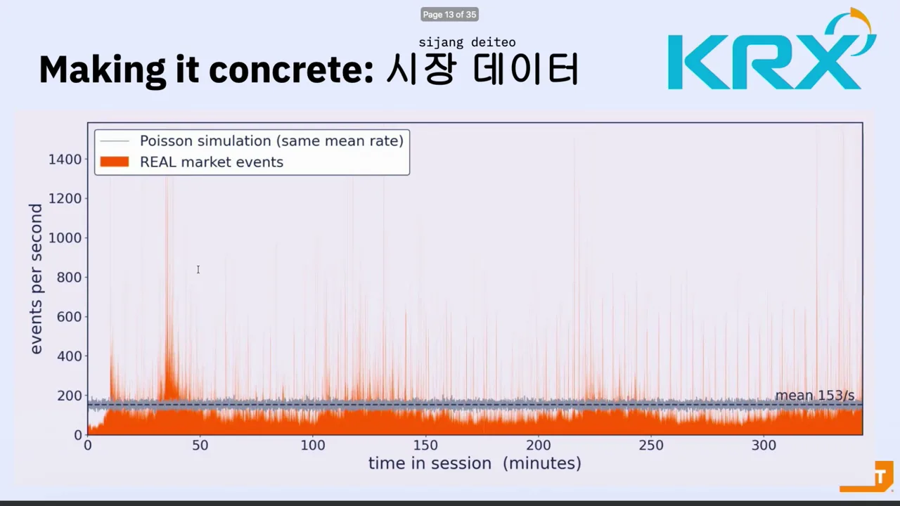
【26:42】Poisson simulation vs REAL market events — time-in-session (minutes). Heavy-tailed bursty reality vs mean-rate Poisson (clearly NOT Poisson; long tails drive infrastructure & modeling).
【26:42】Poisson 模拟 vs 真实市场事件 时间轴（分钟）。重尾、突发的现实 vs 同样均值的 Poisson — 明显不是 Poisson；长尾决定基础设施和建模策略。
【26:43】Same Poisson vs reality chart
【26:43】同上 Poisson vs 现实图
[26:52 – 27:09]
It is real market data, at least at the source. Okay, so here is continuing this maybe tortured argument of comparing to LLM datasets. So back of the envelope math, bear with me. 300 million events per day, times roughly 250 trading days per year.
这是真实的市场数据，至少在源头上是这样。好的，这里继续与 LLM 数据集进行比较的可能令人痛苦的争论。所以，请耐心等待。每天发生 3 亿个事件，相当于每年大约 250 个交易日。
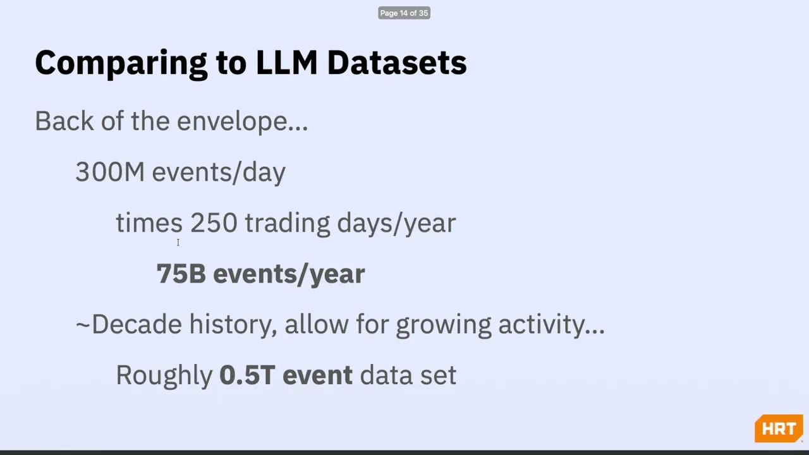
【26:54】Comparing to LLM Datasets — Back of the envelope: 300M events/day × 250 trading days/year = 75B events/year; decade history → roughly 0.5T event dataset
【26:54】与 LLM 数据集对比 粗略估算：3 亿事件/日 × 250 个交易日/年 = 750 亿事件/年；十年历史 → 约 0.5 万亿事件数据集
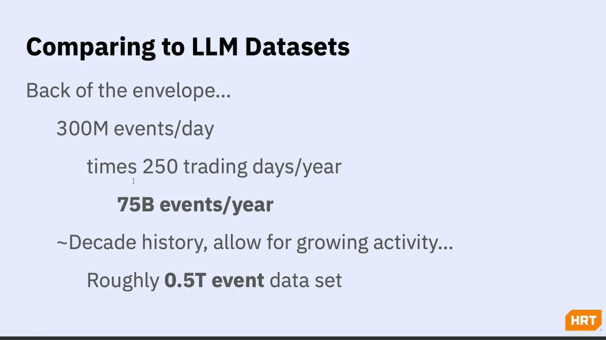
【26:56】Same back-of-envelope
【26:56】同上估算
[27:09 – 27:22]
It gives you 75 billion events per year. Don't check the math, I'm pretty sure it's right, but who knows? You know, roughly a decade of history, allowing for sort of growing activity over time, gives you roughly half a trillion market event datasets
它每年为您提供 750 亿个事件。不要检查数学，我很确定它是正确的，但谁知道呢？您知道，大约十年的历史，考虑到随着时间的推移不断增长的活动，为您提供了大约五万亿个市场事件数据集
[27:22 – 27:37]
without really breaking a sweat. That is a pretty decent amount of data for any sort of LLM type problem. If you think about GPT-3, and I had to go look this up because GPT-3 was a million years ago, and I'm getting very old, I've realized,
不费吹灰之力。对于任何类型的 LLM 类型问题来说，这都是相当不错的数据量。如果你想到 GPT-3，我必须去查一下，因为 GPT-3 是一百万年前的事，而且我已经很老了，我意识到，
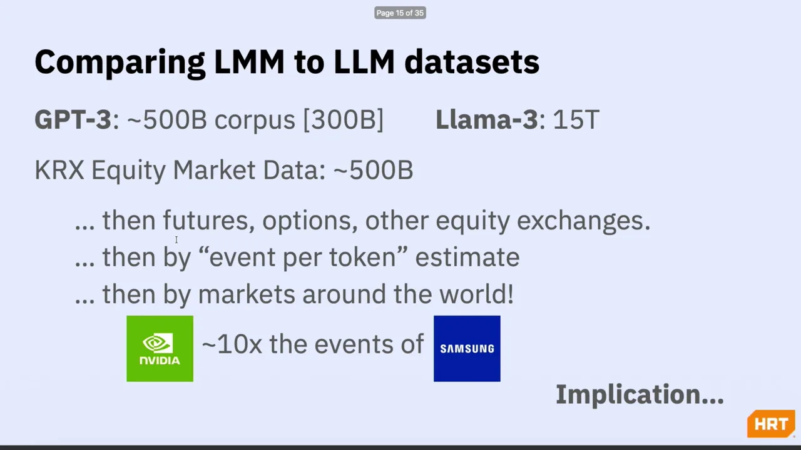
【27:30】Comparing LMM to LLM datasets — GPT-3: ~500B corpus [30B]; Llama-3: 15T. KRX Equity Market Data: ~500B… then futures, options, other exchanges; then 'event per token' estimate → markets around the world! ~10× the events of [Chinchilla] reference. Implication: massive pretraining corpora are realistic.
【27:30】LMM 对 LLM 数据集 GPT-3：约 500B 语料 [30B]；Llama-3：15T。KRX Equity Market Data 约 500B；再叠加期货、期权、其他交易所；再做「event per token」换算 → 全球市场！约 [Chinchilla] 10× 的事件量。启示：做大规模预训练语料的现实路径已具备。
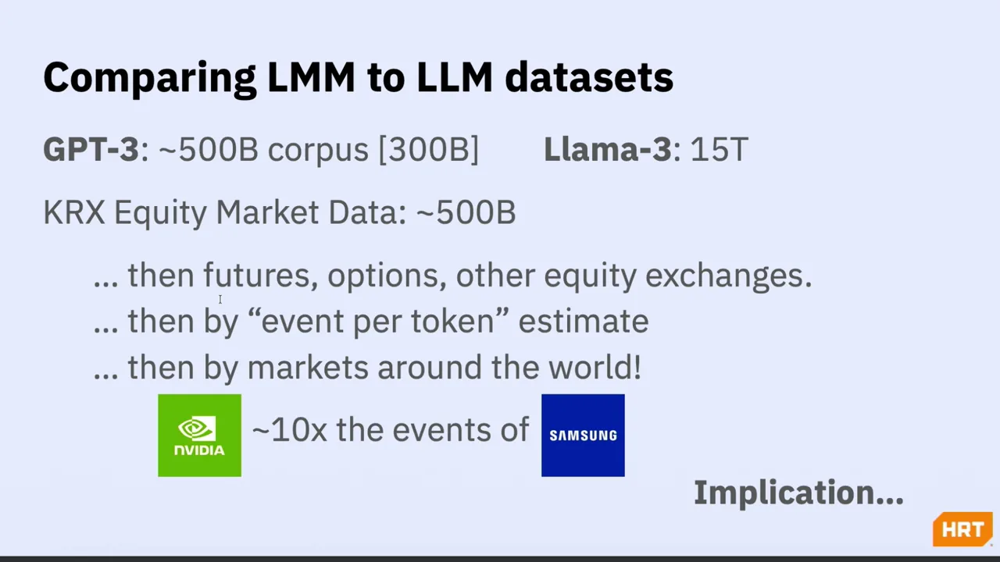
【27:31】Same comparison
【27:31】同一对比
[27:37 – 27:57]
but GPT-3 was trained on a mere 500 billion token corpus, actually only trained for the first 300 billion of that. LLM-3, not that long after, I guess, in the scheme of things, 15 trillion tokens. So my Korean equity market dataset, 500 billion market events, not tokens,
但 GPT-3 仅在 5000 亿个代币语料库上进行了训练，实际上只针对其中的前 3000 亿个进行了训练。 LLM-3，不久之后，我猜，按照计划，15 万亿代币。所以我的韩国股市数据集，5000亿市场事件，不是代币，
[27:57 – 28:14]
because we don't know what a market event is in tokens, but if you aggregate just in Korea alone across futures markets, options, other Korean equity exchanges, which have opened recently, fudge it by your event per token estimate, and then expand by just all the markets in the world.
因为我们不知道代币中的市场事件是什么，但如果您仅在韩国汇总最近开业的期货市场、期权和其他韩国股票交易所的数据，就可以根据每个代币的事件估计来捏造它，然后扩展到世界上所有市场。
[28:14 – 28:33]
For example, Nvidia stock has roughly 10 times the event per day that Samsung does. You end up realizing you have quite a substantial dataset. Now a brief aside to go on a completely different tangent to kind of, don't worry, I'll come back, but let's talk about what I'm actually gonna do
例如，Nvidia 股票每天发生的事件大约是三星的 10 倍。您最终意识到您拥有相当大的数据集。现在稍微说点题外话，谈谈完全不同的切线，别担心，我会回来的，但让我们谈谈我实际上要做什么
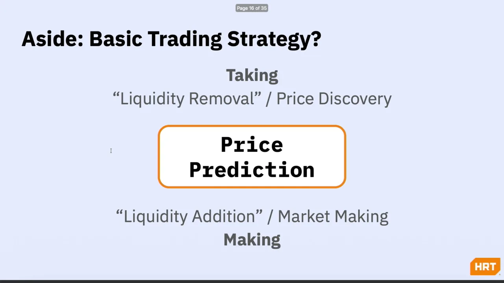
【28:23】Aside: Basic Trading Strategy? — 'Taking' = Liquidity Removal / Price Discovery (Price Prediction). 'Liquidity Addition' / Market Making.
【28:23】插曲：基础交易策略 「Taking」= 流动性回收 / 价格发现（价格预测）。「Liquidity Addition」= 做市。
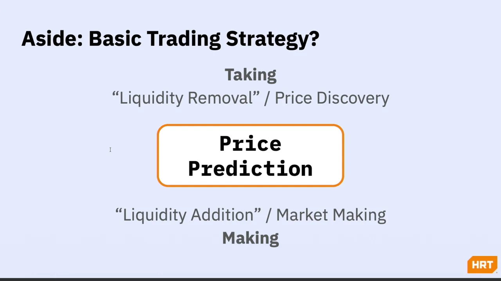
【28:25】Same trading strategy taxonomy
【28:25】同一交易策略分类
[28:33 – 28:44]
with this stuff. So I've been talking a lot about large market models and yada, yada, yada, but what do we really do here at Hasan River Trading? Well, it's kind of complicated, but a very simple way to describe it is we figure out
用这个东西。所以我一直在谈论大市场模型和yada，yada，yada，但是我们在Hasan River Trading 真正做什么呢？嗯，这有点复杂，但描述它的一个非常简单的方法是我们弄清楚
[28:44 – 28:55]
if a stock is going up or down, and if it's going up, we buy it, and if it's going down, we sell it. And this works pretty well in practice. So there are two more fine-grained ways to put this. You can think of taking or liquidity removal,
如果一只股票上涨或下跌，如果它上涨，我们就买入它，如果它下跌，我们就卖出它。这在实践中效果很好。所以有两种更细粒度的方式来表达它。你可以考虑采取或消除流动性，
[28:55 – 29:11]
or if you wanna get really fancy of a price discovery, which basically says, if you believe that the stock price is going up, thanks to your large market model, you should buy it, and if you think it's gonna go down, you should sell it. You can also think about liquidity addition
或者如果你想真正喜欢价格发现，这基本上就是说，如果你相信股票价格正在上涨，由于你的大市场模型，你应该买入它，如果你认为它会下跌，你应该卖出它。您还可以考虑增加流动性
[29:11 – 29:26]
or market making, which is that if you think you have a good estimate of the fair price of an instrument, you should be willing to quote on either side of it, I'm willing to buy at this price or sell at this price or near to it, and that's called market making. I mention this because ultimately we wanna do this.
或者做市，就是如果你认为你对某种工具的公平价格有一个很好的估计，你应该愿意在它的任何一边报价，我愿意以这个价格购买或以这个价格或接近它的价格出售，这就是所谓的做市。我提到这一点是因为我们最终想要这样做。
[29:26 – 29:40]
We want to predict the future, not just kind of build a blob of neural networks about markets. And when I was a wee lad, I learned a little helpful heuristic for how to fit models, linear models, remember those?
我们想要预测未来，而不仅仅是构建一堆关于市场的神经网络。当我还是个小孩子的时候，我学到了一些关于如何拟合模型、线性模型的有用启发式方法，还记得那些吗？
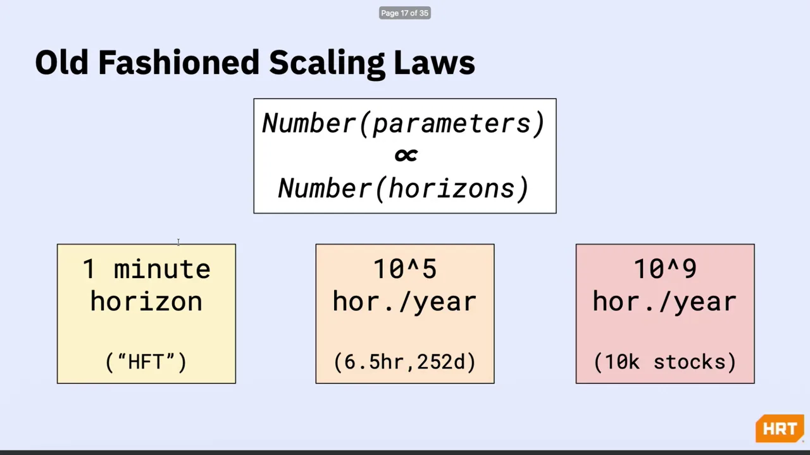
【29:30】Old Fashioned Scaling Laws — Number(parameters) ∝ Number(horizons). 1 minute horizon (HFT); 10^5 horizons/year (6.5hr × 252d); 10^9 horizons/year (10k stocks).
【29:30】老派 scaling 律 Number(parameters) ∝ Number(horizons)。1 分钟 horizon（HFT）；10^5 horizons/年（6.5 小时 × 252 日）；10^9 horizons/年（1 万只股票）。
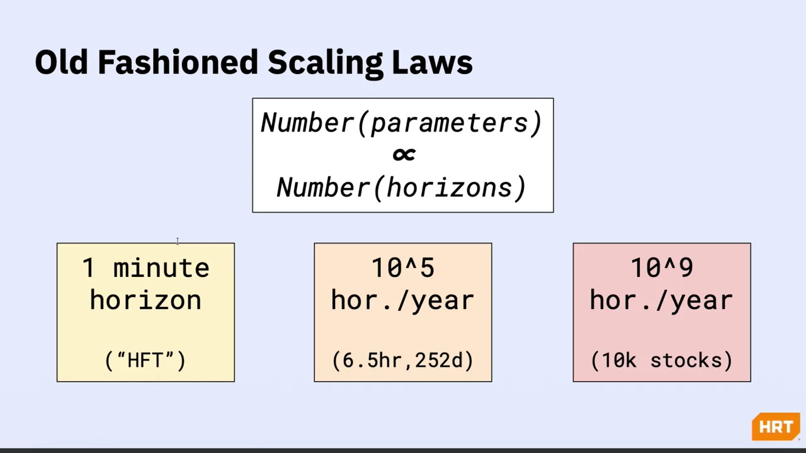
【29:32】Same scaling law framework
【29:32】同一 scaling 律框架
[29:40 – 29:57]
So the heuristic was as follows. If I'm trying to fit a linear regression model to a set of data, I should aspire to have 10 data points per parameter of my linear regression model. This sounds pretty, this sound actually quite quaint for a while because for a while people were doing
所以启发式如下。如果我尝试将线性回归模型拟合到一组数据，我应该希望线性回归模型的每个参数有 10 个数据点。这听起来很漂亮，这个声音实际上在一段时间内很奇怪，因为有一段时间人们在做
[29:57 – 30:13]
neural networks that were bigger than the dataset sizes, but now with the LLM era, I guess we were doing many tokens per parameter again, so I'm on safe grounds. What's Chinchilla optimal, like 20 tokens per parameter? So we're good, 10 tokens per parameter seems fine. But I'm not talking about tokens on this slide,
比数据集大小更大的神经网络，但现在随着 LLM 时代的到来，我想我们又为每个参数做了很多标记，所以我有安全感。 Chinchilla 的最佳方案是什么，比如每个参数 20 个标记？所以我们很好，每个参数 10 个标记似乎没问题。但我不是在谈论这张幻灯片上的代币，
[30:13 – 30:30]
I'm talking about horizons. And that's why I had to introduce the idea of trading because if I wanna make a prediction about stock prices in the future, I better think about when I want it. And a nice representative number might be about one minute. This is a sort of high frequency-ish trading horizon.
我说的是视野。这就是为什么我必须引入交易的想法，因为如果我想对未来的股票价格进行预测，我最好在需要的时候考虑一下。一个好的代表性数字可能约为一分钟。这是一种高频交易范围。
[30:31 – 30:48]
And here's my second back-of-the-envelope calculation. If I wanna make a prediction about one minute in the future of my model, it stands to reason that my model might need to be proportional in size to the amount of independent data points I have at that one minute horizon task.
这是我的第二个粗略计算。如果我想对模型的未来一分钟进行预测，那么我的模型的大小可能需要与我在一分钟范围任务中拥有的独立数据点的数量成比例，这是理所当然的。
[30:48 – 31:00]
So how many minutes have there in a year? Well, it turns out there's roughly 10 to the five one minute horizons in a year. And if I multiply that out by the number of instruments and multiply it again by the number of years in my training data set and so on,
那么一年有多少分钟呢？事实证明，一年中大约有 10 到 5 个一分钟的时间范围。如果我将其乘以仪器的数量，然后再乘以我的训练数据集中的年数等等，
[31:00 – 31:12]
you kind of get to these numbers like 10 to the nine, 10 to the 10, one minute intervals in my data set. So if I was gonna fit a linear regression model to that data set, I could probably get away with 10 to the eight parameters in my linear regression model.
在我的数据集中，你会得到这些数字，例如 10 到 9、10 到 10、一分钟间隔。因此，如果我要将线性回归模型拟合到该数据集，我可能可以在线性回归模型中使用 10 到 8 个参数。
[31:12 – 31:27]
That might be a little bit tricky. So maybe I should instead fit a deep learning model to it. And so it's a completely different logic, but I say it because if you put this all together by my market events token analogy, it's very reasonable to think we might have 10
这可能有点棘手。所以也许我应该为它安装一个深度学习模型。所以这是一个完全不同的逻辑，但我这么说是因为如果你通过我的市场事件代币类比将所有这些放在一起，那么认为我们可能有 10 个是非常合理的
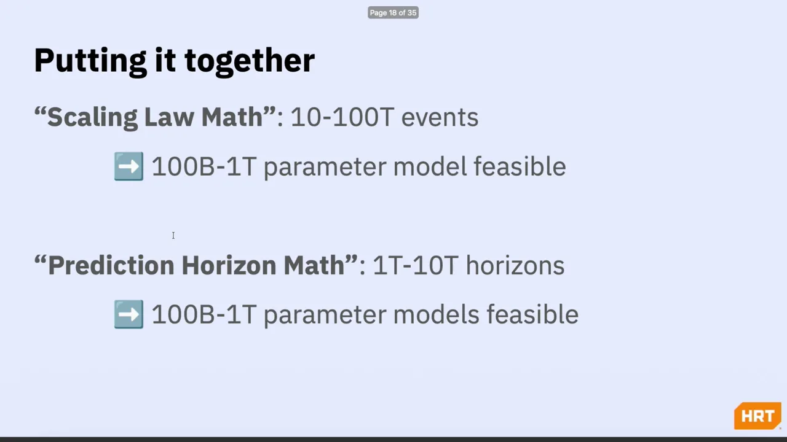
【31:18】Putting it together — 'Scaling Law Math': with 10–100T events, a 100B–1T parameter model is feasible. 'Prediction Horizon Math': with 1T–10T horizons, 100B–1T parameter models are feasible. → Modelling and Scaling.
【31:18】合在一起 「Scaling Law Math」：10–100T events 下，100B–1T 参数模型可行。「Prediction Horizon Math」：1T–10T horizons 下，100B–1T 参数模型可行。→ 进入 Modelling and Scaling 章节。
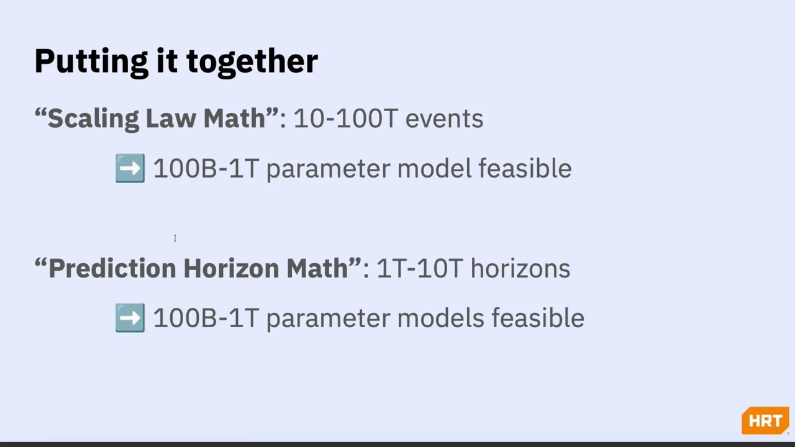
【31:19】Same 'putting it together' bullet
【31:19】同一「合在一起」要点
[31:27 – 31:41]
to a hundred trillion events in our data set. And so by standard sort of scaling law of math, it should stand to reason that every quant finance firm should be racing to build the ultimate one trillion parameter, large market model that will understand the markets.
我们的数据集中有一百万亿个事件。因此，根据标准的数学缩放定律，每个量化金融公司都应该竞相构建最终的万亿参数、能够理解市场的大型市场模型，这是理所当然的。
[31:41 – 31:53]
Or if you're a linear regression, you might think, man, I have a lot of prediction horizons here and I need to fit a hundred billion to one trillion parameter model because that's how much my data set can support without overfitting.
或者，如果您是线性回归，您可能会想，伙计，我这里有很多预测范围，我需要拟合一千亿到一万亿个参数模型，因为这就是我的数据集在不过度拟合的情况下可以支持的数量。
[31:53 – 32:08]
Either way, you kind of get to the same conclusion. And if you've ever wanted a sort of causal explanation for why trading firms have so many GPUs, I would present this to you as math you can impress your friends with. So that was kind of my tortured analogy section.
无论哪种方式，你都会得出相同的结论。如果您想要某种因果解释来解释为什么贸易公司拥有如此多的 GPU，我会将其作为数学呈现给您，您可以通过它给您的朋友留下深刻的印象。这就是我痛苦的类比部分。
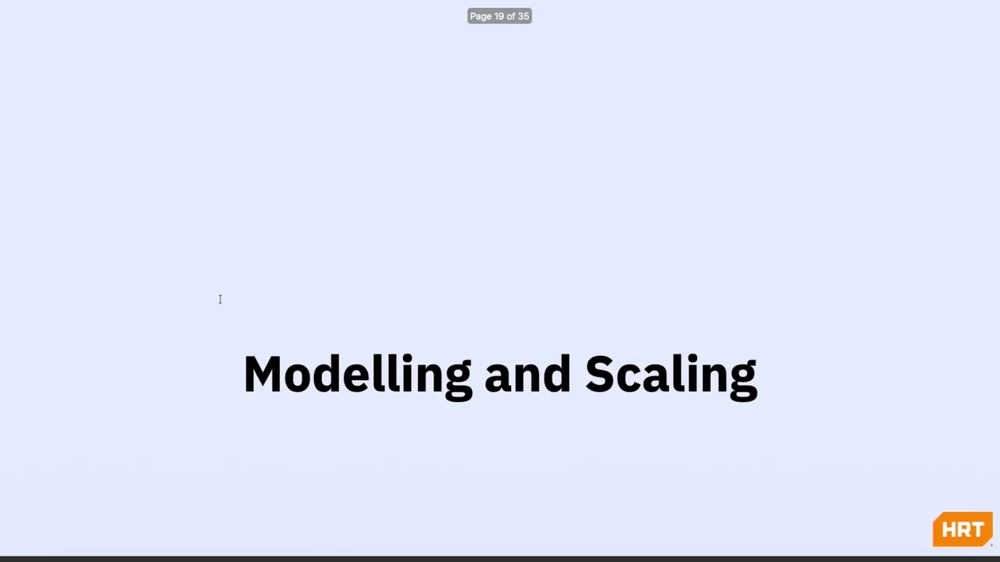
【32:03】Modelling and Scaling (section opener)
【32:03】Modelling and Scaling（章节扉页）
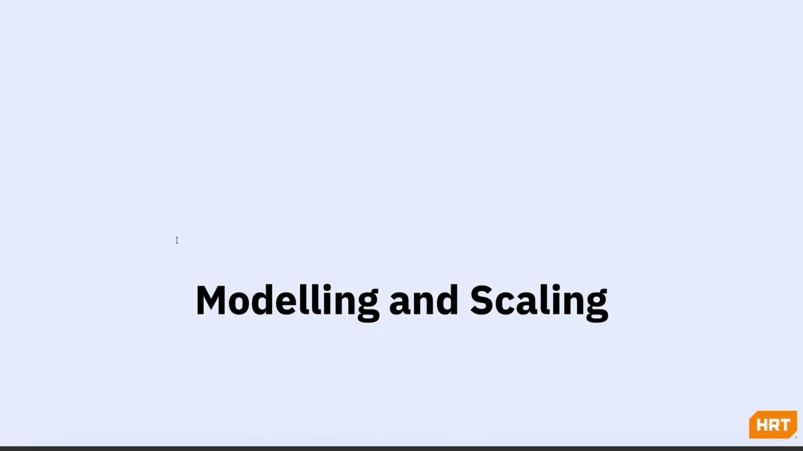
【32:04】Modelling and Scaling (title only)
【32:04】Modelling and Scaling（标题留白）
Modelling and Scaling
- 用预测目标决定记忆长度：关心未来 T 秒 → 需要过去 2T 秒，1,200 秒≈1,200,000 事件，内存开销巨大；跨品种进一步堆叠。
- 速度的作用：挂钟延迟划定可行的「智能上界」（nano / micro / milli），速度—智能呈 Pareto 关系。
- 对模型设计的启示：大 context 必要，但降采样丢信息、attention 推断慢、recurrent 训练慢 → 关键研究问题。
- 面向市场的模型架构：跨品种大 context + GPU 推理 + 位置 self-attention + trade confidence 分类头与 trade price 回归头。
- 与 LMM 域对照：speculative decoding、GPU→ASIC 的取舍、NVIDIA H100 PCIe vs SXM 的 Communicate→Compute 层级。
- 合成数据：约 8 万亿 token 预训练语料中的关键组成；挑战包括单品种 vs 横截面、Bootstrap、重尾、rollout 误差累积。
- LLM Fusion：跨代码融合事件流，探索把市场数据 / 语言作为模态加入 LMM，进行多模态联合预训练。
[32:08 – 32:18]
And I wanna kind of turn more to some of the ways you think about actually solving this problem. This is the bit where I give you thought experiments and no intellectual property.
我想更多地关注一些你考虑实际解决这个问题的方法。这就是我给你们进行思想实验但没有知识产权的地方。
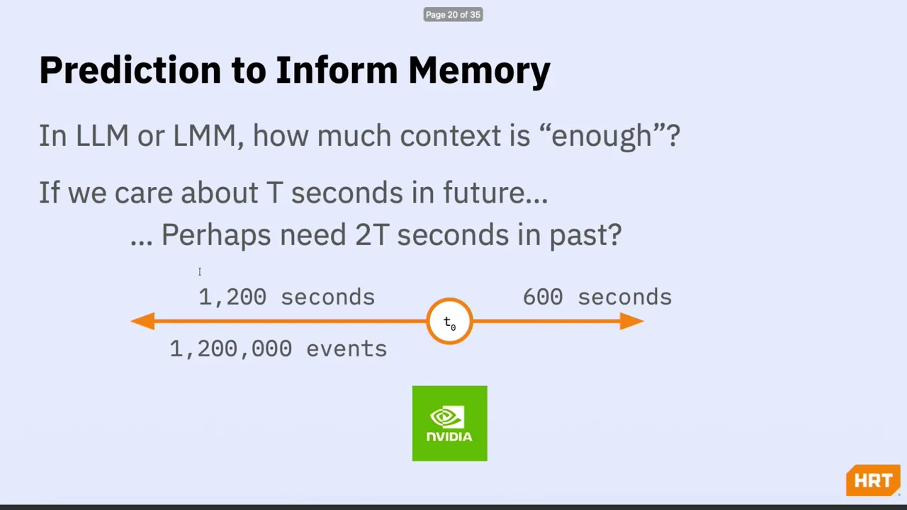
【32:18】Prediction to Inform Memory — In LLM or LMM, how much context is 'enough'? If we care about T seconds in future… we need 2T seconds in past. → 1,200 seconds, 1,200,000 events. Memory is heavy.
【32:18】用预测来决定记忆 LLM/LMM 中，多少 context 才「够」？如果我们关心未来 T 秒… 过去就需要 2T 秒。→ 1,200 秒、1,200,000 事件。Memory 是沉重的。
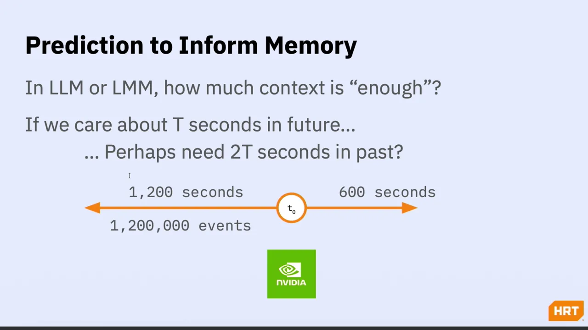
【32:19】Same prediction-to-inform-memory
【32:19】同一「预测驱动记忆」
[32:20 – 32:40]
So here's something that I think is a little bit tantalizing to think about. In the LLM context, we have to think about context. So pre-training is often done on really short horizons. And then later on, you try and extend the context and kind of mid training or continued pre-training stages.
所以我认为这里有一些值得思考的事情。在法学硕士背景下，我们必须考虑背景。因此，预训练通常是在很短的时间内完成的。然后，您尝试扩展中期训练或持续预训练阶段的背景和类型。
[32:40 – 32:55]
Context is expensive, right? You know, the cost of our transformer or really anything you do is somewhat proportional to the context you provide. An interesting thing and the thing that I definitely wouldn't have realized 10 years ago
上下文很昂贵，对吗？您知道，我们的变压器或您所做的任何事情的成本在某种程度上与您提供的上下文成正比。一件有趣的事情，而且是 10 年前我绝对不会意识到的事情
[32:55 – 33:09]
before large language models became a thing is just how little context you can get away with. I would have thought that we were kind of doomed to do the things we do now because you would need so much more context. But in reality, a large fraction of use cases for LLMs
在大型语言模型成为现实之前，你可以摆脱的上下文是多么少。我本以为我们注定要做现在所做的事情，因为你需要更多的背景信息。但实际上，法学硕士的很大一部分用例
[33:09 – 33:31]
aren't actually that context intensive. So you can get it with an LLM with a 32K context and do a lot of interesting things. But is 32K context enough for markets? Another sort of old school data science analogy argument thing is that I was always taught
实际上并不是那么上下文密集。所以你可以通过拥有 32K 背景的法学硕士来获得它，并做很多有趣的事情。但 32K 上下文对于市场来说足够了吗？另一种老派的数据科学类比论证是我总是被教导
[33:31 – 33:47]
that if you need to predict T seconds in the future, you should probably have at least T, maybe two T seconds in the past of history to inform that. This is kind of like an extension of ARIMA time series type thinking. I don't think it's a very extreme claim to say though.
如果你需要预测未来的 T 秒，你可能应该至少有 T 秒，也许是过去的两个 T 秒的历史来告知这一点。这有点像 ARIMA 时间序列类型思维的延伸。但我认为这并不是一个非常极端的说法。
[33:48 – 34:04]
So if I'm thinking about NVIDIA stock, which at peak times can hit thousands of events per second, if I wanna make a 10 minute prediction on NVIDIA stock, it would seem reasonable to say, I should be able to at least remember in my model's context for the last 20 minutes
因此，如果我正在考虑 NVIDIA 股票，在高峰时段每秒可以触发数千个事件，如果我想对 NVIDIA 股票进行 10 分钟的预测，那么似乎可以合理地说，我应该至少能够记住过去 20 分钟的模型上下文
[34:04 – 34:18]
of NVIDIA's stock market activity. That would be over a million events. And that is bigger than basically every off the shelf model you can find in terms of context length. If you think that's a problem
NVIDIA 股票市场活动。那将有超过一百万个事件。就上下文长度而言，这基本上比您能找到的所有现成模型都要大。如果你认为这是一个问题
[34:18 – 34:30]
or maybe can be solved in some way, which obviously it can be solved, but if you think that's maybe not so daunting, it gets a little bit more tough when you think about a property that's I would argue pretty unique to this modality,
或者也许可以通过某种方式解决，这显然是可以解决的，但如果你认为这可能不是那么令人畏惧，那么当你想到我认为这种模式非常独特的财产时，它会变得更加困难，
【34:24】Cross-Sectionality — Cross products (KRX, NQ, ES, CL…) over a 1,200-second window ≈ 1,200,000 events; events stack up further across products over a 600-second window.
【34:24】横截面性 在 1,200 秒窗口内跨产品（KRX、NQ、ES、CL…）≈ 1,200,000 事件；600 秒窗口内跨产品的「more events」堆叠仍然可观。
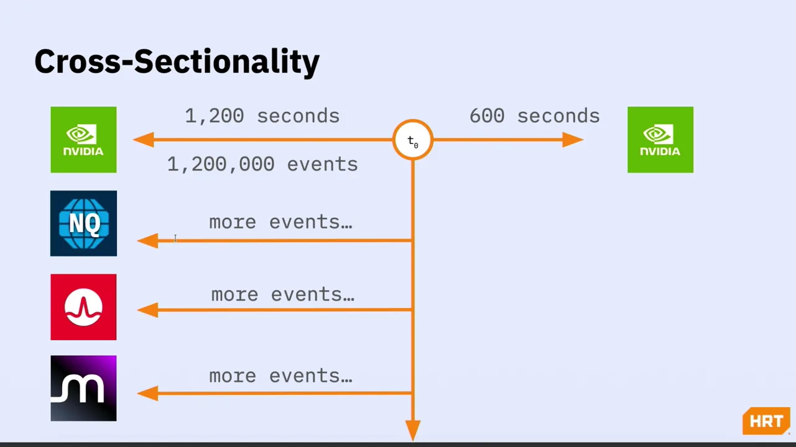
【34:25】Same cross-section diagram
【34:25】同一横截面图
[34:30 – 34:42]
which is cross sectionality. This is this very intuitive idea that financial instruments don't stand alone. They interact with other related instruments at the very high level, just correlation. But we're not trying to do,
这是横截面。这是一个非常直观的想法，即金融工具并不是孤立的。它们与其他相关工具在非常高的水平上相互作用，只是相关性。但我们并不是要尝试做，
[34:42 – 34:55]
correlation is almost like feature engineering. We wanna talk about at the raw substrate. And so the platonic ideal model in my mind will listen to every event on every instrument in the world simultaneously. And I don't think you can very easily build a computer
相关性几乎就像特征工程。我们想谈谈原始基材。因此，我心中的柏拉图式理想模型将同时聆听世界上每种乐器上的每个事件。我不认为你可以很容易地建造一台计算机
[34:55 – 35:07]
to do such a thing, even if you can make a model to train on that. But just thinking about NVIDIA, we've got NASDAQ futures and CME coming over the microwave, we've got Broadcom stock, we've got Micron stock.
做这样的事情，即使你可以制作一个模型来训练它。但想想英伟达，我们有纳斯达克期货和芝加哥商品交易所，我们有博通股票，我们有美光股票。
[35:07 – 35:19]
All these things are very correlated with NVIDIA. And if I was gonna make the best possible prediction about the future of NVIDIA's stock price, I would need to listen to those events as well. And maybe many more. If you think about putting that
这些都和NVIDIA有很大的关系。如果我要对 NVIDIA 股价的未来做出尽可能最好的预测，我还需要倾听这些事件。也许还有更多。如果你考虑把它
[35:19 – 35:34]
in some sort of linear context, you're just gonna blow out any reasonable context length. If you think about what people do for LLMs, this is where stuff like RAG comes in, which I don't know if people still do in 2026. I feel like RAG was very 2024.
在某种线性上下文中，你只会耗尽任何合理的上下文长度。如果你想想人们为法学硕士所做的事情，这就是像 RAG 这样的东西出现的地方，我不知道人们是否还在 2026 年这样做。我觉得 RAG 非常 2024 年。
[35:34 – 35:49]
Let's go see how many RAG posters there are of us here. Sorry if we give a RAG poster. But I think RAG is kind of passe, but we're still doing MCPs. Was that 2025? Anyway, so you could do something, right?
我们去看看这里有多少张 RAG 海报。抱歉，如果我们提供 RAG 海报。但我认为 RAG 已经过时了，但我们仍在做 MCP。那是2025年吗？无论如何，你可以做点什么，对吧？
[35:49 – 36:01]
Where you say like, well, obviously this fire hose is too much. I'm gonna kind of RAG it up. I'm gonna do some sort of embedding of the information from the other stocks and pass it through. But that's not really gonna work.
你说，嗯，显然这个消防水龙带太多了。我要把它搞砸了。我将对其他股票的信息进行某种嵌入并将其传递出去。但这并不会真正起作用。
[36:01 – 36:10]
It's not really gonna cut it, right? This is like not some static thing you can embed in reference. It's something that's dynamic and evolving. All these things are evolving and you're trying to make predictions on all of them.
不会真的砍掉它吧？这不像是一些可以嵌入参考的静态东西。它是动态且不断发展的。所有这些事情都在不断发展，你正试图对所有这些事情做出预测。
[36:10 – 36:15]
They're all co-oval things. You can't just kind of offline this. You have to grapple with it directly.
它们都是共椭圆形的东西。你不能只是离线。你必须直接应对它。
【36:14】Role of Speed — 'Pareto' curve of Intelligence vs Response time: nano / micro / milli / shrug. Wall-clock latency dictates the feasible intelligence envelope.
【36:14】速度的作用 Intelligence 与 Response time 的 Pareto 曲线：nano / micro / milli / shrug。挂钟延迟决定可行的 intelligence 上界。
【36:16】Same Role of Speed Pareto
【36:16】同一 Role of Speed Pareto
[36:17 – 36:32]
Which brings me to a slide which maybe was presented by a different speaker at this conference earlier today, but the role of speed. So why is it a problem that we need so much context? Well, just because it's slow, right? If you had a magical model
这让我想到一张幻灯片，它可能是由今天早些时候的会议上的另一位发言者演示的，但速度的作用。那么为什么我们需要如此多的背景会成为一个问题呢？嗯，只是因为它很慢，对吧？如果你有一个神奇的模型
[36:32 – 36:50]
that could consume as much memory as you want, you'd be good perhaps, but you need to make a decision quickly. And for a lot of people who I talked about AI for trading, I think this is actually a pretty big misconception that everything has to be done within a nanosecond.
这可能会消耗你想要的内存，也许你会很好，但你需要快速做出决定。对于很多我谈论人工智能交易的人来说，我认为这实际上是一个相当大的误解，认为一切都必须在一纳秒内完成。
[36:50 – 37:05]
Well, I think it's just not true because there's only so much you can do in a nanosecond. As long as you are sort of the smartest participant or one of the smartest participant for your response time, you're good. And what I mean by that is in a nanosecond,
嗯，我认为这不是真的，因为在一纳秒内你能做的事情就这么多。只要您是最聪明的参与者或响应时间最聪明的参与者之一，您就很好。我的意思是在一纳秒内，
[37:05 – 37:17]
there's not much you can do. You can't be so smart in a nanosecond. You can be surprisingly smart at a nanosecond, but only so smart, right? If I have a nanosecond, I'm not gonna run a one million context transformer.
你无能为力。你不可能在一纳秒内变得如此聪明。你可以在一纳秒内变得惊人的聪明，但也只是这么聪明，对吧？如果我有一纳秒，我就不会运行一百万个上下文转换器。
[37:17 – 37:29]
If I have a microsecond, a lot of things become available to me. I can build my own chips. I can use FPGAs. I can really overclock a CPU until it's screaming. I can maybe still not do
如果我有一微秒，我就能做很多事情。我可以构建自己的芯片。我可以使用 FPGA。我真的可以对 CPU 进行超频，直到它尖叫为止。我也许还是不能做
[37:29 – 37:41]
the most miraculous deep learning model ever, but I can do something interesting, especially if I'm willing to put the effort into it. If you give me a millisecond, I will calculate everything for you. I will do magical tricks.
这是有史以来最神奇的深度学习模型，但我可以做一些有趣的事情，特别是如果我愿意付出努力的话。如果你给我一毫秒，我会为你计算一切。我会变魔术。
[37:41 – 37:52]
I won't because I'm no longer very good at computers, I feel like, but my team out there, they're pretty smart. By the way, we're hiring for inference engineers. I will interview you and hire you on the spot this week if you're good.
我不会，因为我觉得我不再擅长计算机，但我的团队非常聪明。顺便说一句，我们正在招聘推理工程师。如果你表现出色的话，我会在本周当场面试你并雇用你。
[37:52 – 38:02]
Come say hi. But if you give me a millisecond, I can do a lot of things. And if you give me more, I'll just do anything I want because at that point you've got enough time
过来打个招呼。但如果你给我一毫秒，我可以做很多事情。如果你给我更多，我会做任何我想做的事，因为那时你有足够的时间
[38:02 – 38:18]
to calculate anything you need. And so as long as you're Pareto optimal on this horizon, on this axis, you will do well. And so this is kind of the insight into why we can do these cool deep learning things because yes, at some response time,
计算你需要的任何东西。因此，只要你在这个地平线、这个轴上达到帕累托最优，你就会做得很好。这就是为什么我们可以做这些很酷的深度学习事情的洞察，因为是的，在某些响应时间，
[38:18 – 38:30]
you have, if you're really, really smart, you will find a niche where this works. And then you can spend all your time trying to push yourself to the left to make that response faster and faster. And as you do so, you'll be rewarded.
如果你真的非常聪明，你会找到一个适合它的利基市场。然后你可以花所有的时间试图把自己推向左边，以使反应越来越快。当你这样做时，你就会得到回报。
[38:30 – 38:43]
It's not an exclusionary thing. You have to be a nanosecond reaction trader or not. It's actually, you can be at many points in a spectrum simultaneously. And indeed, the best firms are. So model design implications.
这不是一个排他性的事情。无论你是否是一个纳秒反应交易者。事实上，你可以同时处于频谱中的许多点。事实上，最好的公司就是这样。因此模型设计的影响。
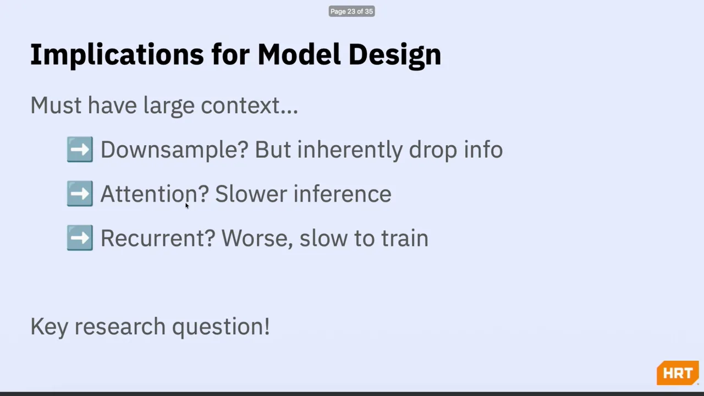
【38:38】Implications for Model Design — Must have large context… but Downsample drops info, Attention is slow to infer, Recurrent is worse & slow to train → Key research question.
【38:38】对模型设计的启示 必须有足够大的 context… 但 downsample 会丢信息；attention 推断慢；recurrent 更差且训练慢 → 关键研究问题。
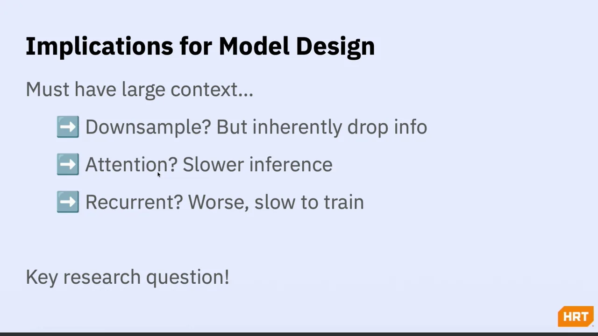
【38:39】Same model-design implications
【38:39】同一模型设计启示
[38:43 – 38:54]
We need a really large context. We have a lot of things we want to remember. We could down sample or feature engineer. This kind of sucks because it goes against the deep learning spirit of take everything in. You drop information once you start
我们需要一个非常大的背景。我们有很多事情想要记住。我们可以缩减样本或进行特征工程师。这种做法很糟糕，因为它违背了深度学习的包容一切的精神。一旦开始，你就会放弃信息
[38:54 – 39:07]
feature engineering, you lose something. You know, attention can scale to 1 million tokens. We know this. But you know, can you do fast inference into those constraints, maybe with some tricks, but it's no small thing, right?
特征工程，你会失去一些东西。您知道，注意力可以扩展到 100 万个代币。我们知道这一点。但你知道，你可以对这些约束进行快速推断，也许可以使用一些技巧，但这不是一件小事，对吗？
[39:07 – 39:21]
Also, training will be very slow. You could do recurrent neural networks. They're pretty efficient, right? By recurrent, I mean, you know, in everything recurrent, from GRUs to Mambas. Things that update kind of in more 01 time.
而且，训练速度会非常慢。你可以做循环神经网络。他们效率很高，对吧？我所说的重复性，是指从 GRU 到曼巴舞，所有重复性的事物。更新的东西更多 01 次。
[39:21 – 39:37]
They are, well, I guess they're just worse, right? There's a reason we're not using a full deep state-space model for LLMs, although we are using hybrids these days, right? They're just kind of worse and they can be worse and slower to train due to various inefficiencies,
他们，嗯，我想他们只是更糟，对吧？尽管我们现在正在使用混合模型，但我们没有为法学硕士使用完整的深度状态空间模型是有原因的，对吗？他们只是有点更糟糕，而且由于各种低效率，他们的训练可能会更糟糕、更慢，
[39:37 – 39:52]
but they can in theory keep like a infinite context, I suppose, right? And the reality is HIT does this. I'm not gonna say. Anyway, but we do a lot of things and I want to kind of inspire you to serve
但理论上它们可以保持无限的上下文，我想，对吧？事实上，HIT 就是这么做的。我不会说。不管怎样，但我们做了很多事情，我想激励你去服务
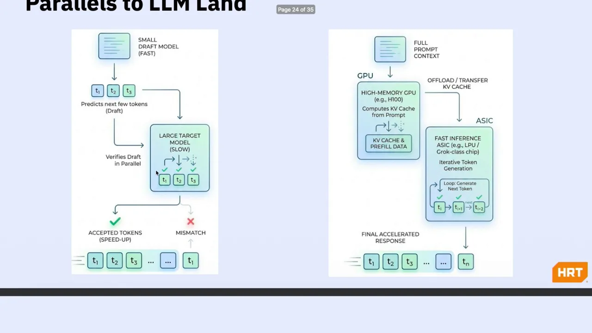
【39:44】Model architecture diagram — large context across symbols; GPU inference; +Add Order, +Markets, simplex, encoders; non-linear feature transforms; positional self-attention; trade confidence classifier + trade price regression heads.
【39:44】模型结构图 跨品种的大 context；GPU 推理；+Add Order、+Markets、simplex、encoders；非线性特征变换；位置 self-attention；trade confidence 分类器 + trade price 回归头
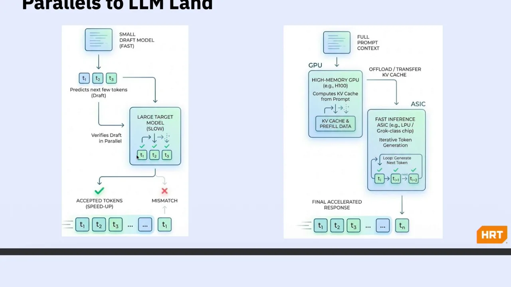
【39:45】Same architecture diagram
【39:45】同一结构图
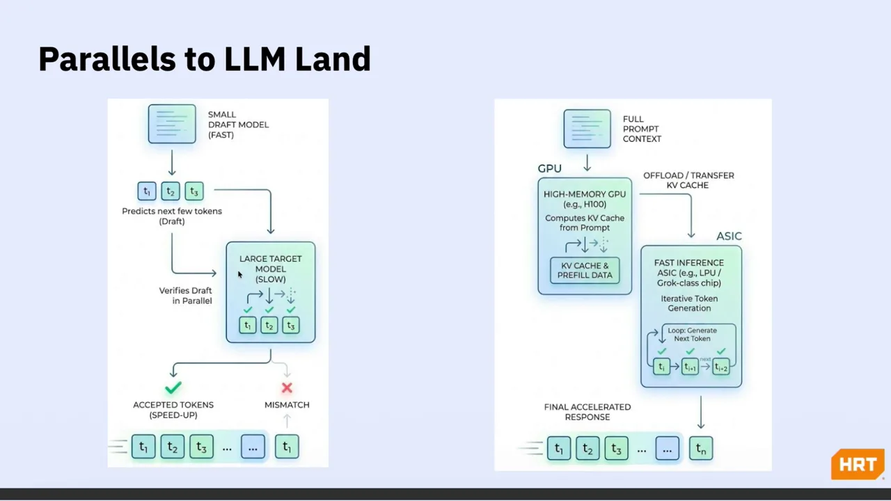
【39:47】Parallels to LMM Land — Recurrent + Markets + simple features GPU inference (Pass bad) vs Large context + cross-position + cross symbol GPU inference (Marginally pass) — mixed quality review!
【39:47】与 LMM 域的对照 Recurrent + Markets + 简单特征 GPU 推理（Pass 偏少） vs Large context + cross-position + cross-symbol GPU 推理（勉强 Pass）— quality review 表现参差。
[39:52 – 40:07]
by again going back to the LLM analogy. So these are beautiful chat GPT 5.5 pro image-generated models, hand lovingly prompted by myself. And these are, this is the Alpha, right? This is sort of the insights from LLM land
再次回到法学硕士的类比。这些是美丽的聊天 GPT 5.5 pro 图像生成模型，由我自己亲手精心提示。这些是，这是阿尔法，对吧？这是LLM土地的一些见解
[40:07 – 40:22]
that you can think of quant trading firms as doing some analogous version too. And so people in LLM land, and this is one of the big interesting things in my career has been watching how trading, which is a very strange and isolated world,
你可以认为量化交易公司也在做一些类似的版本。所以法学硕士领域的人们，这是我职业生涯中最有趣的事情之一，一直在观察如何交易，这是一个非常奇怪和孤立的世界，
[40:22 – 40:35]
sort of does this dance of the outside world where things that are important to us become in and out of fashion of the outside world. And what is very in fashion right now in LLM land is producing as much intelligence per second as possible. And so one cool thing that people do in LLM land
这有点像外部世界的舞蹈，对我们来说重要的事情在外部世界中变得流行或过时。现在法学硕士领域非常流行的就是每秒产生尽可能多的情报。人们在法学硕士领域做的一件很酷的事情
[40:35 – 40:51]
is they have small draft models that run ahead and generate tokens as fast as they can. And then a big chunky LLM comes and verifies the response, speculative decoding. I think this is very analogous to this, right? You come up with a reasonable response as fast as you can
他们有小型草稿模型，可以提前运行并尽可能快地生成代币。然后一个大块的法学硕士来验证响应，推测解码。我觉得这和这个很相似，对吧？你尽快给出合理的回应
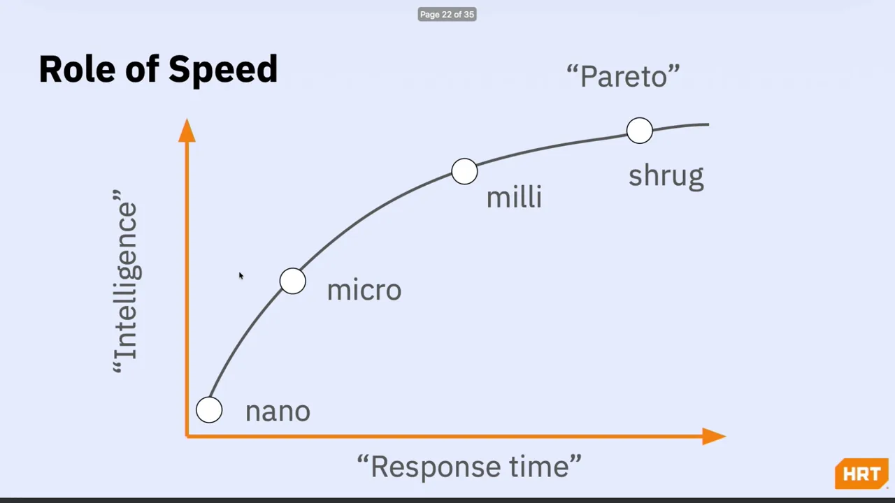
【40:46】Role of Speed Pareto (reused)
【40:46】Role of Speed Pareto（复用）
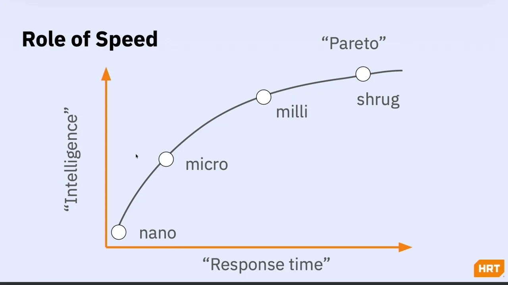
【40:47】Role of Speed Pareto (reused)
【40:47】Role of Speed Pareto（复用）
[40:51 – 41:05]
and then you do something that comes back behind and it says something smarter. This is not gonna work literally for markets, but I think it just sort of shows my argument nicely. On the right, I have Slop. This is Slop, honestly guys.
然后你做了一些后面的事情，它会说一些更聪明的事情。从字面上看，这对市场不起作用，但我认为这很好地表达了我的论点。右边是我的 Slop。老实说，这是Slop。
【40:58】Parallels to LMM Land — GPU architecture for markets (right) vs LLM (left).
【40:58】与 LMM 域的对照 面向市场的 GPU 架构（右） vs LLM GPU 架构（左）
【41:00】Same LLM/MM architecture comparison
【41:00】同一 LLM/MM 架构对比
[41:05 – 41:19]
I think the one on the left is better, but the one on the right is meant to show the idea of, it's very sort of on the cutting edge, which is this idea of doing pre-fill with a really like bulk model, like a GPU, and then using say like a Grok LPU or an etched ASIC
我认为左边的更好，但右边的旨在展示一种非常前沿的想法，即使用非常类似的批量模型（例如 GPU）进行预填充，然后使用像 Grok LPU 或蚀刻 ASIC 这样的想法
[41:19 – 41:33]
to do sort of a more accelerated response. Your big context is some big chunky thing. Compute that offline, store it in a KV cache, store it on, calculate it on a GPU, shove it into an ASIC or something to do really fast inference.
做出更快的反应。你的大背景是一些大块的东西。离线计算，将其存储在 KV 缓存中，存储在 GPU 上，在 GPU 上计算，将其推入 ASIC 或其他东西以进行真正快速的推理。
[41:33 – 41:44]
Again, it goes into this idea of doing the slow things with the right tools and the fast things with the right tools. It does imply you need to be sophisticated enough to do a multi-hardware heterogeneous setup. I'm hiring inference engineers.
再次强调，用正确的工具做缓慢的事情，用正确的工具做快速的事情。它确实意味着您需要足够复杂才能进行多硬件异构设置。我正在招聘推理工程师。
[41:44 – 41:45]
Come talk to me today.
今天就来跟我聊聊吧。
【41:45】Parallels to LLM Land — Speculative Decoding (Draft → Verify) ✓/✗ vs GPU → ASIC Profit → Bad/Lukewarm Coffee. Inference time vs customization/generalization trade-off.
【41:45】与 LLM 域的对照 Speculative Decoding（草稿→验证）✓/✗ vs GPU → ASIC Profit → Bad/Lukewarm Coffee。推理时延 vs 定制化/通用性取舍。
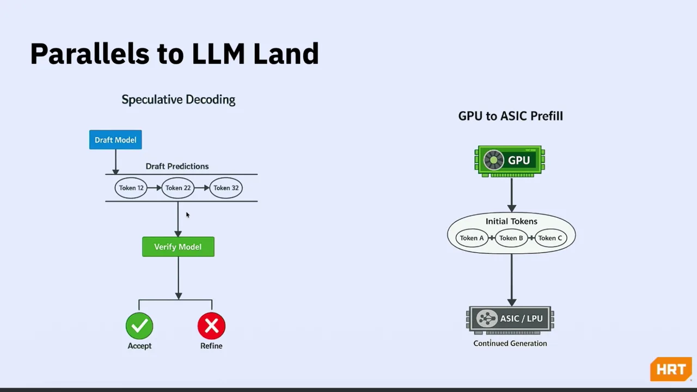
【41:46】Same LLM parallels diagrams
【41:46】同一 LLM 对照图
[41:48 – 41:57]
That's the same picture. And just two different versions. Sorry, my skip slide didn't work. This was Gemini's images, which I think are worse.
这是同一张照片。而且只是两个不同的版本。抱歉，我的跳跃幻灯片不起作用。这是双子座的形象，我认为更糟糕。
【41:57】Same Speculative Decoding vs GPU-to-ASIC diagram
【41:57】同一 Speculative Decoding vs GPU-to-ASIC 图
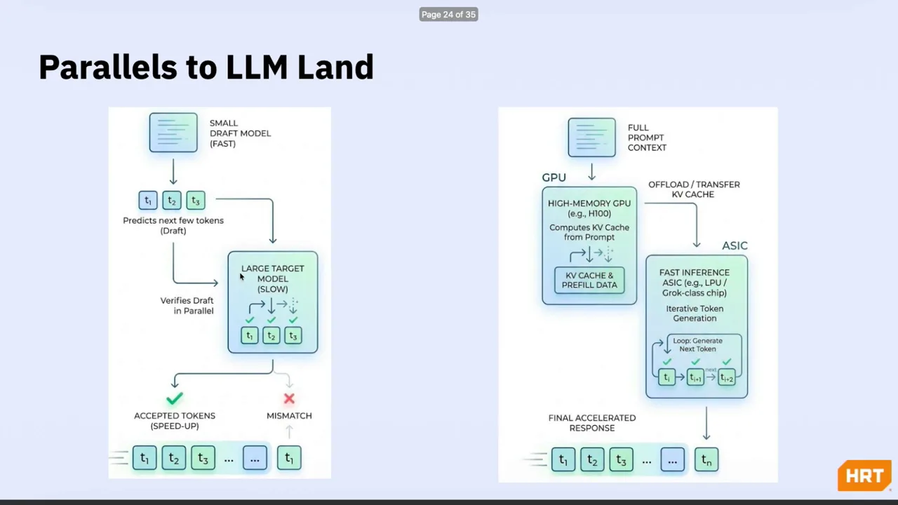
【41:58】Parallels to LMM — large context + cross position + cross symbol (Pass marginally) vs Recurrent + Markets + simple features (Pass fail) — quality tier visualisation.
【41:58】LMM 对照 大 context + cross position + cross symbol（勉强 Pass） vs Recurrent + Markets + 简单特征（Pass fail）— 按质量分级可视化
[41:58 – 42:10]
I don't know. Yeah. Although, look at that little ASIC picture. That's pretty sweet. No, wait, this is Chad GPT, this is Gemini. Right, the word cell and the efficient Chad.
我不知道。是的。不过，看看那张小小的 ASIC 图片。真是太甜蜜了。不，等等，这是 Chad GPT，这是 Gemini。对了，细胞这个词和高效的乍得。
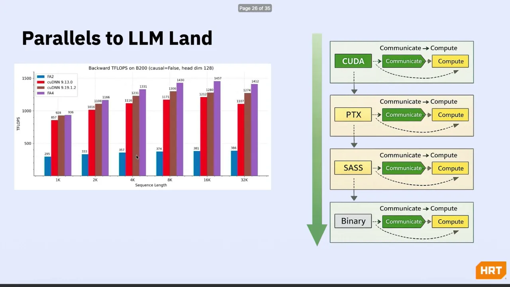
【41:59】NVIDIA H100 PCIe vs SXM (TX/NVLink) — benchmark bar chart: TLS handshake vs SOFTMAX speed; PTX vs SASS vs Binary CUDA vs PTX vs Cooperative Distributed SASS; Communicate → Compute (cross-GPU cooperative).
【41:59】NVIDIA H100 PCIe vs SXM（TX/NVLink）— 柱状图基准对比：TLS handshake vs SOFTMAX 速度；CUDA vs PTX vs Cooperative Distributed SASS；Communicate → Compute（跨 GPU 协作）。
【42:00】Speculative Decoding — Look-Ahead Model → Draft Predictions (yes/no), Verify (yes/no).
【42:00】Speculative Decoding — Look-Ahead Model → Draft Predictions（yes/no）、Verify（yes/no）。
【42:02】Same benchmark chart + compute hierarchy
【42:02】同一基准柱状图 + 计算层级图
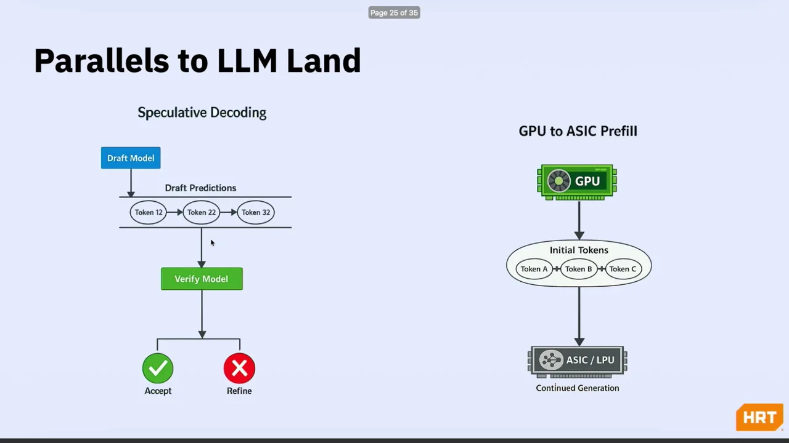
【42:04】Look-Ahead Model + Draft Predictions + Verify (yes/no)
【42:04】Look-Ahead Model + Draft Predictions + Verify（yes/no）
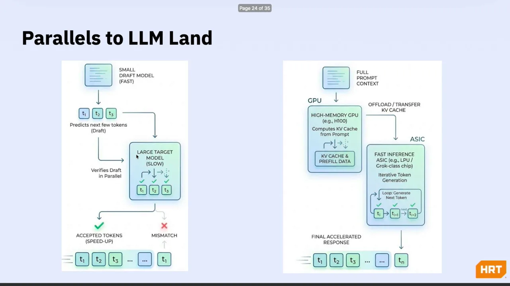
【42:05】Same model architecture (large context variant)
【42:05】同一模型结构（large context 变体）
【42:06】Same model architecture (recurrent variant)
【42:06】同一模型结构（recurrent 变体）
【42:07】Speculative Decoding ✓/✗ verification flow
【42:07】Speculative Decoding ✓/✗ 验证流
【42:09】Benchmark + compute hierarchy — NVIDIA H100 PCIe vs SXM; Communicate → Compute
【42:09】基准 + 计算层级 — NVIDIA H100 PCIe vs SXM；Communicate → Compute
【42:10】Bar chart: CUDA Communicate→Compute vs PTX Communicate→Compute vs SASS Communicate→Compute vs Binary Communicate→Compute (green arrows on right).
【42:10】柱状图：CUDA Communicate→Compute vs PTX Communicate→Compute vs SASS Communicate→Compute vs Binary Communicate→Compute（右侧绿色箭头）。
【42:12】Same Communicate→Compute benchmark chart
【42:12】同一 Communicate→Compute 基准柱状图
[42:12 – 42:25]
Yes, anyway, I'm just gonna skip that because it's boring. So beyond market scaling, so there are many ways to kind of continue this LLM, LMM analogy. And one of the things that's really captivated me
是的，无论如何，我会跳过它，因为它很无聊。因此，除了市场规模之外，还有很多方法可以继续这种 LLM、LMM 类比。其中一件真正让我着迷的事情
【42:13】Same benchmark + Beyond Market Scaling title
【42:13】同一基准图 + Beyond Market Scaling 章节扉页
【42:15】Synthetic Data — The pretraining corpus spans 19 high-level categories; the largest components are accounting-quality-filtered and synthetic web crawl data (~8 trillion tokens). A key component: large-scale synthetic data generation (Dataology AI).
【42:15】合成数据 预训练语料覆盖 19 个高层类别；最大占比来自 accounting-quality-filtered 与 synthetic web crawl 数据（约 8 万亿 token）。关键组成：large-scale synthetic data generation（Dataology AI）。
【42:17】Same synthetic data overview
【42:17】同一合成数据概览
[42:25 – 42:38]
over the years, I think we may even have a blog post on it because a lot of our interns have worked with us over the years is what does synthetic market data look like? And so this was always just an interesting thought experiment to us.
多年来，我认为我们甚至可能有一篇关于它的博客文章，因为多年来我们的很多实习生都与我们一起工作，综合市场数据是什么样的？所以这对我们来说始终只是一个有趣的思想实验。
[42:38 – 42:52]
And then it became more and more, I guess we were ahead of a curve because now it's the case of first order consideration for LLM training. Here are two recent papers. The left is from the Neomotron tech report
然后它变得越来越多，我想我们已经领先了，因为现在这是法学硕士培训的首要考虑因素。这是最近的两篇论文。左图来自 Neomotron 技术报告
[42:52 – 43:06]
and the right is the Aki Trinity large tech report, which is a great tech report by the way, I really love it. So both these models, which are open models, were trained on quite intense amounts of synthetic data, especially the one on the right.
右边是 Aki Trinity 大型科技报告，顺便说一句，这是一篇很棒的科技报告，我真的很喜欢它。因此，这两个模型都是开放模型，都接受了大量合成数据的训练，尤其是右边的模型。
[43:06 – 43:19]
Something like 8 trillion of the 20 trillion tokens it trained on were synthetic. I used to think this was kind of silly and circular because it's degenerate, right? It sounds like a free lunch. And I think there are many, many challenges
它训练的 20 万亿代币中有 8 万亿是合成代币。我曾经认为这有点愚蠢和循环，因为它是堕落的，对吗？听起来就像免费的午餐。我认为还有很多很多的挑战
[43:19 – 43:31]
of getting synthetic data to actually benefit your model training run, but clearly it's an important part of LLM recipe. So how are we gonna make synthetic data for large market models? And I don't fully know,
获取合成数据实际上有利于您的模型训练运行，但显然它是法学硕士配方的重要组成部分。那么我们如何为大型市场模型制作合成数据呢？而且我并不完全知道，
【43:27】Synthetic Data challenges — Single-instrument vs cross-sectional; Bootstrap issue; Heavy-tailed distributions; Error accumulation in rollouts; Utility for training. Cool Academic Work link.
【43:27】合成数据的挑战 单品种 vs 横截面；Bootstrap 问题；重尾分布；rollout 误差累积；训练用途。Cool Academic Work 链接。
【43:28】Same synthetic-data challenges
【43:28】同一合成数据挑战
[43:31 – 43:47]
but we're gonna figure it out together with this slide. We're gonna talk about all the problems and then we can brainstorm together afterwards at our happy hour, come see me later. So thinking about the cross-sectional instrument issue. So again, in the synthetic data context,
但我们将通过这张幻灯片来解决这个问题。我们将讨论所有问题，然后我们可以在欢乐时光一起集思广益，稍后再来见我。所以要考虑横截面仪器问题。再说一次，在合成数据背景下，
[43:47 – 44:00]
you're not trying to synthetically generate K interleaved documents all at once that are all consistent, right? You're trying to generate just one document of high quality. That's not gonna be very helpful if you then wanna go train on that data.
您不会尝试一次性综合生成 K 个交错文档，并且这些文档都是一致的，对吧？您正试图生成一份高质量的文档。如果您想利用这些数据进行训练，这不会很有帮助。
[44:00 – 44:14]
To have valid training data for synthetic data, it needs to kind of capture the whole interleaved nature of markets. So you need to simultaneously generate market data from many correlated instruments and it'll have to be mutually consistent
为了获得合成数据的有效训练数据，它需要捕获市场的整体交错性质。因此，您需要同时从许多相关工具生成市场数据，并且数据必须相互一致
[44:14 – 44:29]
and self-consistent that it instantly blows at the problem complexity. There's a bootstrap issue. You know, one way you can make really good synthetic data for your open model is to use a really expensive LLM that generates the data and then you train on it.
并且自洽，它立即解决了问题的复杂性。存在引导程序问题。您知道，为开放模型制作非常好的合成数据的一种方法是使用非常昂贵的 LLM 来生成数据，然后对其进行训练。
[44:29 – 44:40]
Well, I don't have that really expensive model that someone else made because I have the best model in the market, right? So I have a bootstrap issue. How am I gonna generate high quality synthetic data to train on?
好吧，我没有别人制造的那种非常昂贵的模型，因为我有市场上最好的模型，对吧？所以我有一个引导问题。我如何生成高质量的合成数据来进行训练？
[44:40 – 44:50]
Isn't that just as hard as training a really good model in the first place? You can think of ways around that, but it's something to ponder at least as a lot of synthetic data applications do rely on a bootstrap model,
这不是和一开始训练一个非常好的模型一样困难吗？你可以想办法解决这个问题，但至少值得思考，因为许多合成数据应用程序确实依赖于引导模型，
[44:50 – 45:01]
but it's far more powerful. The Microsoft AI tech report, by the way, is very noble in that it did not rely on a more powerful model to achieve its results, which I recommend reading as well. Another thing to think about,
但它的威力要大得多。顺便说一句，微软人工智能技术报告非常高尚，因为它没有依赖更强大的模型来实现其结果，我也推荐阅读该报告。还有一件事要考虑，
[45:01 – 45:15]
heavy-tailed distributions, market data is kind of weird. It's kind of boring until it's not. If you generated, say, 100 traces for some hypothetical synthetic data generating model, would you know it was doing it right?
重尾分布，市场数据有点奇怪。这有点无聊，直到它不再。例如，如果您为某个假设的合成数据生成模型生成了 100 条跟踪，您知道它做得正确吗？
[45:15 – 45:25]
Would you be able to see? One of the things that's very interesting about large language model data cleaning is how much it relies on just eyeballing it. What if you can't eyeball it? Or what if you can eyeball it,
你能看到吗？大型语言模型数据清理非常有趣的事情之一是它在多大程度上依赖于目测。如果你看不到它怎么办？或者如果你能用眼睛观察它呢？
[45:25 – 45:38]
but your brain can't interpret it? To shout out Yann LeCun, there's also the problem of error accumulation. So Yann LeCun had a great slide once where he was like, LMs are doomed because every time you generate a token,
但你的大脑无法解释它？值得一提的是，Yann LeCun 还存在错误累积的问题。 Yann LeCun 有一次很棒的幻灯片，他说，LM 注定要失败，因为每次你生成一个代币，
[45:38 – 45:50]
it's gonna be a little wrong, or maybe it'll be right, but stochastically wrong. And if you roll out of N tokens, you accumulate errors until eventually the whole thing goes insane. And I guess one of the interesting things
它可能会有点错误，或者也许是对的，但随机地是错误的。如果你推出 N 个代币，你就会积累错误，直到最终整个事情变得疯狂。我想其中一件有趣的事情
[45:50 – 46:03]
we've learned is that doesn't happen. There are some arguments as to why that LMs are long rollouts are somewhat self-correcting. But it's not clear what those arguments would apply in this case. And yeah, I guess the final test,
我们了解到，这种情况不会发生。关于为什么 LM 需要长时间部署的一些争论在某种程度上是可以自我纠正的。但目前尚不清楚这些论点在本案中适用什么。是的，我想最后的测试，
[46:03 – 46:18]
is this a good idea at all? There's a really cool academic work from a group at Oxford where they do some work on market data and apply these ideas to it. I recommend checking it out with some great people. Finally, LLMs themselves.
这是个好主意吗？牛津大学的一个小组做了一项非常酷的学术工作，他们对市场数据进行了一些研究，并将这些想法应用到其中。我建议和一些优秀的人一起看看。最后是法学硕士本身。
【46:14】LLM Fusion — Cross-product / cross-symbol fusion (KRX, NASDAQ, NVDA, SBUX, PG, KO, JPM, MSFT…). Common +1 axis brings together event streams.
【46:14】LLM Fusion — 跨品种 / 跨代码融合（KRX、NASDAQ、NVDA、SBUX、PG、KO、JPM、MSFT…）。共同的 +1 轴把事件流整合到一处。
【46:15】Same LLM-fusion cross-symbol diagram
【46:15】同一 LLM fusion 跨品种图
[46:18 – 46:34]
I've avoided talking about LLMs for markets. And again, this is sort of a misconception I wanna correct, is that you can do a lot in markets with just market data. I think people have a Twitter driven characterization of markets as kind of being this very reactive thing
我避免谈论市场法学硕士。再说一遍，这是我想纠正的一个误解，即仅凭市场数据就可以在市场上做很多事情。我认为人们对市场有一种推特驱动的特征，认为这是一种非常反应性的东西
[46:34 – 46:50]
where there's a news headline and it's like a race to see who can react or so on. There is a thing, but I would say really fails to understand that markets are very rich without external information like this. The net aggregate dance of all the players in the game
那里有一个新闻标题，就像一场竞赛，看谁能做出反应等等。有件事，但我想说的是，如果没有这样的外部信息，我真的无法理解市场是非常丰富的。游戏中所有玩家的净聚合舞数
[46:50 – 47:06]
is itself a hugely rich information source. And that's what most of these prop quant trading firms are doing with their automated strategies at least. But that being said, there is a lot of information in natural language and many sorts of trades that only really work and make sense
本身就是一个非常丰富的信息源。至少这就是大多数自营量化交易公司正在使用其自动化策略所做的事情。但话虽这么说，有大量的自然语言信息和许多种真正有效且有意义的交易
[47:06 – 47:16]
if you have access to this outside information that is outside the markets themselves. So to tack on to all the problems I've already outlined of large market models, now I wanna add language to it as well.
如果您有权访问市场本身之外的外部信息。因此，为了解决我已经概述的大型市场模型的所有问题，现在我还想为其添加语言。
【47:16】LLM Fusion (research direction) — Open models - PIT? Open models with post-training for markets. Add market data modality to LMM? Add language data modality to LMM? Pretrain multimodal LL+LMM.
【47:16】LLM Fusion（研究方向）开源模型 - PIT? 带后训练的市场开源模型。把 market data 当成 LMM 的模态？把 language data 当成 LMM 的模态？多模态 LL+LMM 联合预训练。
【47:17】Same LLM fusion text
【47:17】同一 LLM fusion 文本
[47:18 – 47:30]
There's lots of interesting questions here that if you wanna work on, please come talk to me after this and I will hire you, is how to fuse LLMs of markets. So there's a whole bunch of interesting quandaries to think about.
这里有很多有趣的问题，如果你想解决，请在这之后跟我谈谈，我会雇用你，就是如何融合市场法学硕士。因此，有一大堆有趣的难题需要考虑。
[47:30 – 47:47]
It is quite unreasonable to think that HRT will tomorrow drop a great one trillion parameter model that's up there with the best open models. I'm not saying we're not smart enough, but it's not a very economically wise thing to do. So what should we do?
认为 HRT 明天就会放弃一个与最好的开放模型相媲美的万亿参数模型是相当不合理的。我并不是说我们不够聪明，但这不是一件在经济上非常明智的事情。那么我们应该做什么呢？
[47:47 – 47:59]
Well, maybe we can think about using the models that are already out there. What's wrong with the models already out there? Well, everyone wants to train their model the most recent knowledge cutoff that they can, right? So it's most maximally useful.
好吧，也许我们可以考虑使用现有的模型。现有的模型有什么问题？好吧，每个人都想用最新的知识来训练他们的模型，对吗？所以它是最有用的。
[47:59 – 48:12]
Well, in quant finance, we do this little thing called bank testing, where we want to sort of check how well we would do in the past. And what we do is we train models using information that was available at the point in time in the past and see how well it would have done.
嗯，在量化金融中，我们做了一个叫做银行测试的小事情，我们想检查一下我们过去的表现。我们所做的就是使用过去某个时间点可用的信息来训练模型，并看看它的表现如何。
[48:12 – 48:25]
That's not gonna go so well if you have a model of a knowledge cutoff of the end of 2025. How do you get around that? Still, maybe you can take an older model and try and make it better. Can that really catch up?
如果你有一个 2025 年底知识截止的模型，那就不会那么顺利了。你如何解决这个问题？不过，也许您可以采用旧模型并尝试使其变得更好。真的能赶上吗？
[48:25 – 48:38]
How can you get out of this dilemma? That's a great research question that we're making great progress on solving. How can you add market data to an LLM or should you add large language data to a large market model?
怎样才能摆脱这个困境呢？这是一个伟大的研究问题，我们在解决这个问题上取得了巨大进展。如何向法学硕士添加市场数据，或者应该向大型市场模型添加大型语言数据？
[48:38 – 48:52]
Both things are worth considering. I put a little picture down here and a reference to a paper that I'm still thinking about like a year later, which is training large language models via neural cellular automata. This is a very cute, fun paper
这两件事都值得考虑。我在这里放了一张小图片，并参考了一年后我仍在思考的一篇论文，该论文是通过神经细胞自动机训练大型语言模型。这是一张非常可爱、有趣的纸
[48:52 – 49:01]
with a pre-pre-trained model based on cellular automata rules. And they generate a whole bunch of data from cellular automata and they generate this pre-pre-training data. So it's like another modality.
具有基于元胞自动机规则的预训练模型。他们从元胞自动机生成一大堆数据，并生成这些预训练数据。所以这就像另一种方式。
[49:01 – 49:13]
It's like game of life modality. And I think about this a lot because what would happen if you trained a large, what would happen if you added market data? There's just another piece of data in your pre-training dataset.
这就像生活方式的游戏。我对此思考了很多，因为如果你训练大量数据会发生什么，如果你添加市场数据会发生什么？您的预训练数据集中还有另一条数据。
[49:14 – 49:26]
Is that just like good? It's structured information, right? Models wanna learn structured information and data. Wanna just throw it all in a soup and see what happens. Maybe you could. Maybe you could buy a really large number of GPUs
这样就很好了吗？这是结构化信息，对吧？模型想要学习结构化信息和数据。想把它们全部扔进汤里看看会发生什么。也许你可以。也许你可以购买大量的 GPU
[49:26 – 49:30]
and do that. That would be very interesting. So in conclusion,
并这样做。那会很有趣。所以总而言之，
【49:28】LLM Fusion + Conclusion (with [South Korea / NORWAY] board image)
【49:28】LLM Fusion + 结论（配 [South Korea / NORWAY] 题目封页）
【49:29】HAIL as '[Neo]Lab' — AI zeitgeist is still 'scaling-piled' so… XX,000 GPUs today, custom hardware… Positive feedback loop. Scaling Deep Learning In Financial Markets is… Scaling Deep Learning (in General!). Solve markets first, then everything else!
【49:29】HAIL 作为「[Neo]Lab」 AI 主流仍是「scaling-piled」，所以…XX,000 GPU 现役、定制硬件…正反馈循环。Scaling Deep Learning In Financial Markets 也是 Scaling Deep Learning (in General!)。先解市场问题，再外推到一切！
【49:31】Same HAIL-as-NeoLab summary
【49:31】同一 HAIL-as-NeoLab 总结
结论 · HAIL 与 Q&A
- 结论：Scaling Deep Learning in Financial Markets 本质上仍是 Scaling Deep Learning in General；先把市场问题解好，再外推到一切。
- HAIL 自比「[Neo]Lab」：AI 主流仍是 scaling-pilled，现役数万 GPU + 定制硬件形成正反馈循环。
- 展位 B201、Odd Lots 播客与 hudsonrivertrading.com/machine-learning/ 等信息；进入现场 Q&A 环节。
[49:33 – 49:44]
the AI zeitgeist, I feel like it's still very scaling build. Everyone's scaling, scaling, scaling. It used to be scaling pre-training. Now it's like how many RL environments can you buy and sell to scale?
人工智能时代精神，我觉得它仍然是非常可扩展的构建。每个人都在扩大规模、扩大规模、扩大规模。它曾经是扩展预训练。现在，您可以按规模购买和销售多少个 RL 环境？
[49:44 – 49:56]
But still scaling build. And so I guess I'll say to you that quant trading is also pretty scaling build and very exciting. And I think I've tried to provide you some proof of that today with my back of envelope math.
但仍在扩展构建。所以我想我会告诉你，量化交易也是相当规模化的，而且非常令人兴奋。我想我今天已经尝试用我的粗略数学向你们提供一些证明。
[49:57 – 50:09]
But you know, we have a large number of GPUs and we have custom hardware teams. And if we put these things together and we generate really cool models which produce more results. So she used that results to then reinvest
但你知道，我们拥有大量的 GPU，并且我们有定制硬件团队。如果我们将这些东西放在一起，我们就会生成非常酷的模型，从而产生更多结果。所以她利用这些结果进行再投资
[50:09 – 50:15]
in buying more GPUs and so on. We've got a great video on YouTube of one of our data centers which is in a mine in Norway. It's pretty cool.
购买更多 GPU 等等。我们在 YouTube 上发布了一段关于我们位于挪威矿井的数据中心的精彩视频。非常酷。
[50:17 – 50:27]
But yeah, scaling deep learning and financial markets was the name of the talk. And I think I wanna emphasize that scaling deep learning and financial markets is just like scaling deep learning in general, just on a different modality.
但是，是的，扩大深度学习和金融市场是这次演讲的名称。我想我想强调的是，扩展深度学习和金融市场就像扩展一般深度学习一样，只是模式不同。
[50:27 – 50:38]
And all the things you know and are useful in large language models probably have analogies in markets. And that is both why it's so interesting and so tantalizing because you know, the answers are different
你所知道的并且在大型语言模型中有用的所有东西可能在市场中都有类比。这就是为什么它如此有趣和如此诱人，因为你知道，答案是不同的
[50:38 – 50:53]
but a lot of our thought process is the same. You can draw inspiration from LLMs but you can't just sort of blindly apply them. You have to think for yourself and solve the problems. And since everyone can just say like, you know, hyperbolic things, I'm gonna say solve markets first
但我们的很多思维过程都是相同的。你可以从法学硕士中汲取灵感，但你不能盲目地应用它们。你必须自己思考并解决问题。既然每个人都可以说，你知道，双曲线的事情，我会说首先解决市场问题
[50:53 – 51:04]
and then maybe we'll solve everything else. And that is the end of my talk. We have a booth. It's way in the back of a sponsor hall. So please come see me. The t-shirts are A plus this year.
然后也许我们就能解决其他所有问题。我的演讲到此结束。我们有一个摊位。它位于赞助商大厅的后面。所以请来见我。今年的 T 恤是 A plus。
【50:55】Questions and Booth Info — Booth B201; Iain Dunning (link); Odd Lots podcast (link). hudsonrivertrading.com/machine-learning/
【50:55】提问与展位信息 Booth B201；Iain Dunning（链接）；Odd Lots 播客（链接）；hudsonrivertrading.com/machine-learning/
【50:56】Same Q&A / booth
【50:56】同一 Q&A / 展位
[51:04 – 51:16]
I'm on Twitter. I say irresponsible things sometimes, follow me. I have an hour long podcast that I did with Bloomberg which I think goes into more of a trading aspect of things which might be interesting. And we have this kind of landing page
我在推特上。我有时会说一些不负责任的话，跟我来吧。我和彭博社做了一个小时的播客，我认为这更多地涉及到可能有趣的交易方面的事情。我们有这样的登陆页面
[51:16 – 51:32]
for our machine learning roles but we're hiring for researchers, engineers from my team. We have a lot of team here at ICML this year and would love to talk to you about the opportunities. Thank you for your patience and time with my rambling. Sorry for the echoes.
为我们的机器学习角色，但我们正在招聘我团队中的研究人员和工程师。今年我们在 ICML 有很多团队，很乐意与您讨论这些机会。感谢您对我的漫无目的的耐心和时间。抱歉引起回声。
[51:32 – 51:56]
And I will stand here and take as many questions as I can handle until I get kicked off. Thank you. I think, yes, there's like a microphone that is coming around. Don't ask what my shop ratio is.
我将站在这里，回答尽可能多的问题，直到我开始。谢谢。我想，是的，就像一个麦克风即将出现。别问我的店铺比例是多少。
[51:56 – 52:14]
Someone did that like the first time I gave a story. They're like, what's your shop ratio? I was like, dude, infinite. I cannot hear you. Hello, hello. Hey.
有人这样做，就像我第一次讲故事时那样。他们会问，你的店铺比例是多少？我就像，伙计，无限。我听不到您的声音。你好，你好。嘿。
[52:14 – 52:30]
Hi, thanks for the talk. It was really interesting. I guess one thing that people are like scaling people also right now is the scaling of the research dimension. We just had a talk from Google on like recursive self-improvement.
你好，谢谢你的谈话。这真的很有趣。我想人们现在喜欢缩放的一件事就是研究维度的缩放。我们刚刚在谷歌进行了一场关于递归自我完善的演讲。
[52:31 – 52:54]
And it seems like some of the frontier's labs are also seemingly making bets in this direction. I'm wondering if, is this something HRT is thinking about or try, maybe have success in? And if not, what do you think are some limiting factors that needs human judgments and human inner loop?
一些前沿实验室似乎也在朝这个方向押注。我想知道，这是否是 HRT 正在考虑或尝试的事情，也许会成功？如果不是，您认为需要人类判断和人类内循环的限制因素是什么？
[52:54 – 53:01]
Thank you. Thank you for your question. That is perfect because I have this conversation basically every week at this point.
谢谢。谢谢你的提问。这是完美的，因为此时我基本上每周都会进行这样的对话。
[53:03 – 53:22]
Okay, the question was recursive self-improvement, trading, so on. I think that today, for example, everyone at HRT is token maxing, not performatively, but because they want to accelerate their work. I think we are unanimous in our opinion
好吧，问题是递归的自我提升、交易等等。例如，我认为今天 HRT 的每个人都在进行代币最大化，不是为了表演，而是因为他们想加速他们的工作。我认为我们的意见是一致的
【53:05】Same Q&A / booth
【53:05】同一 Q&A / 展位
[53:22 – 53:44]
that it's basically impossible to get LLMs today to do useful research in the sense of generating novel ideas and doing kind of meaningful auto-research type flows. We have everything we need to do it and we've tried it and it just isn't there yet. I don't personally find that very surprising.
今天基本上不可能让法学硕士进行有用的研究，产生新颖的想法并进行有意义的自动研究类型的流程。我们拥有做到这一点所需的一切，并且我们已经尝试过，但还没有实现。我个人并不觉得这很令人惊讶。
[53:44 – 53:59]
And I also do not know that it says much about how things will be in a year or two. I'm not gonna make some declarative statement that this cannot change. I do think, having watched our internship class, Interactive Claude, that there is a training data issue
我也不知道它是否能说明一两年后情况会如何。我不会做出一些声明说这无法改变。看了我们的实习课程 Interactive Claude，我确实认为存在训练数据问题
[54:01 – 54:17]
where I'm not sure that the progress of LLMs in this domain will be uniform. I think we're already seeing a lot of signs of spiky intelligence. And I don't know quite how to explain it, but I would say that a friend of mine
我不确定这个领域的法学硕士的进展是否会是一致的。我认为我们已经看到了很多高智商的迹象。我不太知道如何解释，但我会说我的一个朋友
[54:17 – 54:36]
was one of the key contributors to Alpha Fold. And when we talked about his experience in Alpha Fold 1, what they were doing reminded me a lot of my own work in that they had a very clearly defined leaderboard and a metric and they could kind of run their own version of a back test, which was sort of try their folding strategy
是 Alpha Fold 的主要贡献者之一。当我们谈论他在 Alpha Fold 1 中的经历时，他们所做的事情让我想起了我自己的很多工作，因为他们有一个非常明确定义的排行榜和指标，他们可以运行自己版本的回溯测试，这有点像尝试他们的折叠策略
[54:36 – 54:50]
on different proteins and see how they did. But at the end of a day, the success of Alpha Fold 1 would be on a held-out set as part of his protein folding competition. And so they could test as much as they want on their kind of own validation set,
不同的蛋白质，看看它们的表现如何。但最终，Alpha Fold 1 的成功将成为他的蛋白质折叠竞赛的一部分。因此他们可以在自己的验证集上进行尽可能多的测试，
[54:50 – 55:04]
but the more of a sort of cherry-picked on it, the more they would essentially overfit to it, even if the model wasn't trained on it. This is very analogous to quant finance, I think. And so I guess I would say to you or anyone thinking about this,
但对它的挑选越多，他们就越会过度适应它，即使模型没有接受过训练。我认为这与量化金融非常相似。所以我想我会对你或任何思考这个问题的人说，
[55:04 – 55:23]
what is the sort of estimated time to an LLM, an LLM basically being prompted when this protein folding competition, assuming it didn't know how already, autonomously, like just go, come up with the ideas. Because nothing in Alpha Fold 1 was that exotic.
获得法学硕士的预计时间是多少，法学硕士基本上在蛋白质折叠竞赛时被提示，假设它不知道如何已经自主地想出想法。因为 Alpha Fold 1 中没有任何东西那么奇特。
[55:23 – 55:38]
It was the standard components of deep learning applied to a novel modality. I think no one really thinks that LLMs this year or maybe even next year will be at a one-shot Alpha Fold level kind of research ideas. And that is why I think there's still some time
它是应用于新颖模式的深度学习的标准组件。我认为没有人真正认为今年甚至明年的法学硕士将处于一次性 Alpha Fold 级别的研究想法。这就是为什么我认为还有一些时间
[55:38 – 55:51]
for quant trading. And by the time you automate quant trading, many other things are gonna be super weird and well, we'll all be dealing with that together, I guess. So that's my answer. But yes, HTT is very interested
用于量化交易。当你实现量化交易自动化时，许多其他事情都会变得非常奇怪，我想我们都会一起处理这个问题。这就是我的答案。但是，是的，HTT 很感兴趣
[55:51 – 56:04]
in accelerating a work with AI and we do. It's great for code and stuff, but yeah, on the research front, I don't know. If RSI takes off soon, then yeah, we're all cooked. Hot take.
加速人工智能的工作，我们确实这样做了。这对于代码和其他东西来说非常有用，但是，是的，在研究方面，我不知道。如果 RSI 很快就会上升，那么是的，我们都完了。热拍。
[56:07 – 56:23]
Thank you for your talk. I was just curious to understand as the scale of financial data and market data is growing, how do you see the role of traditional models like decision trees or ensembles evolve alongside transformers
谢谢你的讲话。我只是好奇地想了解，随着金融数据和市场数据规模的不断增长，您如何看待决策树或集成等传统模型与 Transformer 一起发展的作用
[56:23 – 56:42]
and how important will this remain? So one thing I didn't entirely gloss over, but mostly did is the role of horizon. I mentioned it briefly in that one-minute horizon analogy. So if someone said to me, Ian, make a trading strategy
这仍然有多重要？所以我没有完全掩盖但主要掩盖的一件事是地平线的作用。我在那个一分钟地平线的比喻中简短地提到过它。所以如果有人对我说，伊恩，制定一个交易策略
[56:42 – 56:54]
that sort of has a prediction horizon holding time of like 30 days, I would not go near a neural network for a very long time. I would probably use linear regression.
那种预测范围的保持时间约为 30 天，我不会在很长一段时间内接近神经网络。我可能会使用线性回归。
[56:56 – 57:08]
I think there's an interesting contradiction to be pulled apart there. So the reason I would do that is because of my second argument for why you can do really big things in deep learning. If you use this horizon-based argument,
我认为这里存在一个有趣的矛盾。所以我这样做的原因是因为我的第二个论点是为什么你可以在深度学习中做真正的大事。如果你使用这种基于视野的论证，
[57:08 – 57:22]
it sort of suggests that the longer horizon you are thinking about, the more simple a model class you need to use. On the other hand, my sort of deep learning LLM pill thing, it shouldn't really care about horizon. If you have a true sort of large market model,
这有点表明您考虑的范围越长，您需要使用的模型类就越简单。另一方面，我的深度学习法学硕士丸之类的东西，它不应该真正关心地平线。如果你有一个真正的大市场模型，
[57:22 – 57:35]
it should be somewhat independent of the horizon of trading you're gonna do. It understands market that shouldn't be like a prediction horizon tied concept at all. I do think that everyone in this industry
它应该在某种程度上独立于您要进行的交易范围。它理解市场根本不应该像一个与预测范围相关的概念。我确实认为这个行业的每个人
[57:35 – 57:49]
is trying to push these deep learning ideas to as long a horizon as possible, but it's kind of like with LLMs, how do you do really long-term reasoning successfully? It's really tough, and I think that's one insight to think about
试图将这些深度学习思想推向尽可能长的视野，但这有点像法学硕士，如何成功地进行真正的长期推理？这真的很困难，我认为这是一个值得思考的见解
[57:49 – 58:04]
why you might be able to train that one trillion parameter large market model, but can you use it to predict the price of Tesla in a month? There's some gap there missing between those two things. And so I do think that there is still a role
为什么你也许可以训练那个万亿参数的大市场模型，但是你能用它来预测特斯拉一个月后的价格吗？这两件事之间缺少一些差距。所以我确实认为仍然有一个作用
[58:04 – 58:20]
for those traditional methods at the longest horizons. On the other hand, it's the past, I think, and it's very clear about deep learning-based methods that kind of eating up most systematic trading from the fast horizons outwards,
对于那些最长视野的传统方法。另一方面，我认为，这已经是过去了，基于深度学习的方法很明显会从快速视野向外吞噬掉大多数系统化交易，
[58:20 – 58:43]
as all my trading firm peers in the room would probably agree, unless you work at Kansei. Hi, this is Kunal from IIT, Karakpur. It was great listening to you, actually, and I wanted to touch upon your point on context window length for financial data set,
房间里所有贸易公司的同事可能都会同意，除非你在 Kansei 工作。大家好，我是来自印度理工学院卡拉克普尔的库纳尔。实际上，很高兴听到您的讲话，我想谈谈您关于金融数据集的上下文窗口长度的观点，
[58:43 – 59:04]
where you mentioned about RAG and MCPs, as well as one of the options which really failed, correct? Because we need large context windows. I was exploring similar research problem at IIT, Karakpur, where we explored RAG MCP servers, and then I went on an opinion of these language models
您在其中提到了 RAG 和 MCP，以及真正失败的选项之一，对吗？因为我们需要大的上下文窗口。我在卡拉克普尔 IIT 探索类似的研究问题，在那里我们探索了 RAG MCP 服务器，然后我对这些语言模型发表了看法
[59:04 – 59:21]
to understand financial data sets. They really need to go to the intrinsic properties of data, unless the embeddings, unless the tokens understand what the financial data set mean, the LLMs could not inference. So we went on fine-tuning data sets
了解金融数据集。他们确实需要了解数据的内在属性，除非嵌入，除非代币理解金融数据集的含义，否则法学硕士无法推断。所以我们继续微调数据集
[59:21 – 59:38]
instead of enriching the context window, and then I forced myself to say that, okay, can we have something like finance LLMs, which would be a separate vertical altogether, which would have its own tokens, which would have its own embeddings related to finance,
而不是丰富上下文窗口，然后我强迫自己说，好吧，我们可以拥有像金融法学硕士这样的东西吗？这将是一个完全独立的垂直领域，它将有自己的代币，它将有自己与金融相关的嵌入，
[59:38 – 59:49]
so that I come out of the challenge of creating context windows and dealing with large context windows. I wanted to invite your opinion on that, more than a question.
这样我就摆脱了创建上下文窗口和处理大型上下文窗口的挑战。我想征求您对此的意见，而不仅仅是一个问题。
[59:55 – 60:13]
I think that's what I was saying here, right? Is that what you mean? Yeah, I mean, is that the right way to go where financial companies create their own finance LLMs, rather than reutilizing the existing LLMs and challenging them on increasing the context windows?
我想这就是我在这里所说的，对吗？你是这个意思吗？是的，我的意思是，金融公司创建自己的金融法学硕士，而不是重新利用现有的法学硕士并挑战他们增加背景窗口，这是正确的方法吗？
【59:58】LLM Fusion (repeated)
【59:58】LLM Fusion（复用）
[60:14 – 60:29]
That is the research question, I suppose. Yeah, it is. And I wanted to get your opinion on that. I think it's a really interesting research question to pursue. And why not do everything essentially at the same time?
我想这就是研究问题。是的，确实如此。我想听听你对此的看法。我认为这是一个非常有趣的研究问题。为什么不基本上同时做所有事情呢？
【60:18】Questions and Booth Info (repeated)
【60:18】提问与展位信息（复用）
【60:20】Questions and Booth Info (repeated)
【60:20】提问与展位信息（复用）
[60:30 – 60:34]
But one of those things will probably be the best. Sure, yeah. In the long run.
但其中一件事可能是最好的。当然，是的。从长远来看。
[60:41 – 60:51]
Thanks you for the talk. Sorry, I think if you wanna ask a question, you might wanna go to the middle because that's where the microphone is, and that will get your question answered probably better. Please.
谢谢你的谈话。抱歉，我想如果你想问问题，你可能想走到中间，因为那是麦克风的位置，这样你的问题可能会得到更好的回答。请。
[60:52 – 61:08]
Thank you for the talk. I have a question regarding the tokenization for the numerical data. So I see, like in practice, how did you do the tokenization for the numerical data? And also for the loss function you used
谢谢你的谈话。我有一个关于数字数据标记化的问题。所以我知道，就像在实践中一样，你是如何对数值数据进行标记化的？还有你使用的损失函数
[61:08 – 61:19]
for the numerical data, do you still use the next token prediction or use something else? That's first question. The second question is regarding the training, retraining the model.
对于数值数据，你仍然使用下一个标记预测还是使用其他东西？这是第一个问题。第二个问题是关于训练、重新训练模型。
[61:19 – 61:32]
And because the data size is very large, like based on your, like, yeah. So how often do you retrain the model or you do the continuous training?
因为数据量非常大，就像基于你的一样，是的。那么您多久重新训练一次模型或进行持续训练呢？
[61:35 – 61:50]
Because it's very costly to do that. And how do you reflect the market shock if you don't do the, like, retraining very frequently? That's two questions. Thank you. So I can't answer those questions directly
因为这样做的成本非常高。如果你不经常进行再培训，你如何反映市场冲击？这是两个问题。谢谢。所以我无法直接回答这些问题
[61:50 – 62:12]
because I wouldn't have a job afterwards. But yeah, I think that is a great point that those are the detailed questions that people on my team work on. As to retraining the model as markets change, I think one thing I would say is that as humans,
因为以后我就找不到工作了。但是，是的，我认为这是一个很好的观点，这些是我团队中的人们正在研究的详细问题。至于随着市场变化重新训练模型，我想我要说的一件事是，作为人类，
[62:12 – 62:31]
we can fall trapped to overstating the sort of nature of like regimes and market data. So even during, you know, pretty crazy market breakdowns like COVID, at the level of data that I'm talking about in this talk, it's not clear that anything has actually
我们可能会陷入夸大类似制度和市场数据性质的困境。因此，即使在像新冠这样非常疯狂的市场崩溃期间，就我在本次演讲中讨论的数据而言，目前还不清楚是否有任何事情实际上已经发生了。
[62:31 – 62:42]
really meaningfully changed from the perspective of the model. If you believe that you've learned general representation of markets, during extreme events like that, it's still a two-sided market mostly
从模型的角度来看，确实发生了有意义的变化。如果你相信你已经了解了市场的一般表征，那么在这样的极端事件期间，它仍然是一个双面市场
[62:42 – 62:59]
of people buying and selling things. And if a model really understands things at that level, it's not clear that it is like vastly out of domain, even during events that seem very out of domain to us. I think that's kind of an interesting thing to ponder. It's like, what does it mean to generalize
人们买卖东西的人。如果一个模型真正理解了那个级别的事物，那么即使在我们看来非常超出范围的事件期间，也不清楚它是否完全超出了范围。我认为这是一件值得思考的有趣的事情。就像，概括是什么意思
[62:59 – 63:09]
when you're operating at this level of granularity and how would you know you're failing to generalize? What would it look like if a model was failing to generalize beyond surface level things, like not making as much money as you expected,
当你在这种粒度级别上操作时，你怎么知道你无法概括？如果一个模型无法概括出表面层面的事情，比如没有赚到你预期的那么多钱，那会是什么样子？
[63:09 – 63:22]
but, you know, in a high stress environment, it's kind of hard to know how much that is. So, yeah. This is the last question that we have time for, but we can continue the conversations outside after there's another talk starting right at 1.30.
但是，你知道，在高压环境下，很难知道具体有多少。所以，是的。这是我们有时间回答的最后一个问题，但我们可以在 1.30 开始另一场谈话后继续在外面进行对话。
[63:24 – 63:39]
I would like to challenge the paradigm that retraining- I don't want to be challenged. I just want to answer your question. Retraining again and again on market data, are you training it to learn the market dynamics or are you making it learn the market strategies
我想挑战再培训的范式——我不想被挑战。我只是想回答你的问题。对市场数据进行一次又一次的再训练，你是训练它学习市场动态还是让它学习市场策略
[63:39 – 63:54]
or what are you trying to retrain for? Like if you look at the latest Gemini models, they are from Jan 25 cutoff, Opus models Jan 26, even like GPD models somewhere in December 25. So we don't really need the latest models.
或者你想再培训的目的是什么？就像如果你看一下最新的 Gemini 模型一样，它们是从 1 月 25 日截止的，Opus 模型是从 1 月 26 日开始的，甚至像 GPD 模型是从 12 月 25 日开始的。所以我们真的不需要最新的模型。
[63:54 – 64:04]
We can actually put them more capabilities on what they need and that's where all the agentic systems come into the flow where the new information can be fed to an older trained model
实际上，我们可以为他们提供更多满足其需要的功能，这就是所有代理系统进入流程的地方，新信息可以输入到旧的训练模型中
[64:04 – 64:21]
or older knowledge trained model, even though it's trained on them recently. So I believe, are you training again and again to make it learn the new market data or new market strategies? Or does the decade of history of training
或旧的知识训练模型，即使它是最近对它们进行训练的。所以我相信，你是不是一次又一次的训练，让它学习新的市场数据或者新的市场策略？或者说十年的培训历史
[64:21 – 64:36]
already has made it learn all the strategies then why do we need retraining for? Well, I think as time passes, you see more data, just full stop, right? This is why if you're an LLM company, you're constantly scraping the internet, right?
已经让它学会了所有的策略那为什么我们还需要再训练呢？嗯，我认为随着时间的推移，你会看到更多的数据，就这样吧？这就是为什么如果你是一家法学硕士公司，你会不断地在互联网上抓取信息，对吗？
[64:36 – 64:43]
Cause it's always more tokens. So it's always good to keep training cause it's more tokens, right? That's like the simplest answer.
因为它总是有更多的代币。所以继续训练总是好的，因为它有更多的代币，对吧？这就像最简单的答案。
[64:45 – 64:57]
I think the rest of your question conflates maybe two different things, which is kind of like a model of how markets work and then yeah, what you do to take action based on that. And those can be different systems. I was more talking today, I guess,
我认为你的问题的其余部分可能混杂了两个不同的东西，这有点像市场如何运作的模型，然后是的，你要根据这个模型采取什么行动。这些可以是不同的系统。我今天说的比较多，我猜
[64:57 – 65:10]
about the how to markets work, which then would inform a strategy rather than the strategy itself. But I think there's something to unpick there. I think you're making a useful distinction, but it's quite nuanced and I'm out of time
关于市场如何运作，这将为战略而不是战略本身提供信息。但我认为那里有一些东西需要取消。我认为你做出了有用的区分，但它非常微妙，而且我没时间了
[65:10 – 65:13]
because the next speaker is up. Thank you everyone. Come mob me right now.
因为下一位发言者已经发言。谢谢大家。赶紧来围攻我吧
【65:42】ICML conference logo (closing)
【65:42】ICML 会议 logo（收尾）